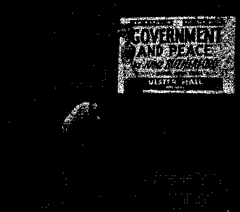
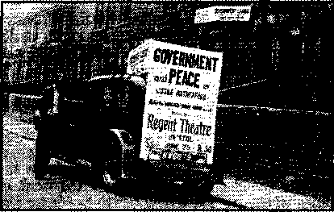
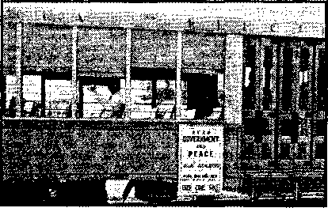
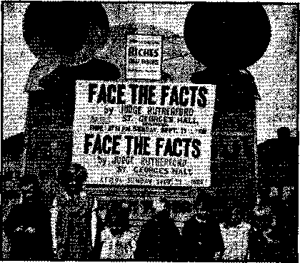

Who Will Join Hitler’s Crusade?
“They Shall Know that I Am Jehovah” (Part 1) 9
Gallantry to Women and Children
Counsel by J. F. Rutherford
Under the Totalitarian Flag
“Catholics Must Teach the Press”
Demonism and the ,R. C. Church
British Comment
Published every other Wednesday by
WATCHTOWER BIBLE AND TRACT SOCIETY, INC.
Ill Adams St., Brooklyn, N. Y., U. S. A.
Editor Clayton J. Woodworth
Business Manager Nathan H. Knorr
Five Cents'a Copy
(1 a year In the United States tl.il to Canada and all other countries
NOTICE TO SUBSCRIBERS
Remlttanosa! For your own safety, remit by postal or express money order. When coin or currency Is lost In the ordinary malls, there la no redress. Remittances from countries other than those named below may be made to ths Brooklyn office, but only by International postal money order.
Re tie lot of a naw or renewal subscription will be acknowledged only when requested. Notice of Expiration la sent with the journal one month before subscription expires. Please renew promptly to avoid loss of copies. Send Change of address direct to us rather than to the post office. Tour request should reach us at least two weeks before the date of issue with which It Is to taka effect. Send your old as well as the new address. Copies will not be forwarded by the post office to your new address unless extra postage is provided by you.
Published also In Afrikaans, Bohemian, Danish, Dutch, Finnish, French, German, Greek, Hungarian. Japanese, Norwegian, Polish, Portuguese, Spanish', Swedish, Ukrainian; also special Australian edition In English.
OFFICES FOR OTHER COUNTRIES
England 34 Craven Terrace, London, W. 2
Canada 1 40 Irwin Avenue. Toronto 5, Ontario
Australia 7 Beresford Road, Strathfield. N.S.W. South Africa 623 Boston House, Cape Town
Entered as second-class matter at Brooklyn, N. T., under the Act of March 8, 1870.
“Pull over to the curb, Buddy!”
“What’s wrong, officer 1”
“You just went through a red light. Whatsa matter? Are ya blind?”
“Yes, officer; color blind.”
“Not only that, but you were doing 50.”
“I was not. My speedometer registered 60.” “Let me see your license!”
“Impossible! I don’t own one.”
“Well, let me see ybur owner’s certificate!”
“I’m afraid I can’t show you that either. I just stole this car.”
“Stole this ear! What’s your name, Buddy V” "Napoleon. ”—Selected.
“When I was a little child,” the sergeant sweetly addressed his men at the end of an exhaustive hour of drill, “I h< a set of wooden soldiers. There was a poor'little boy in the neighborhood and after T had been to Sunday school one day and listened to a stirring talk on the beauties of charity, I was soft enough to give them to him. Then I wanted them back and cried, 15iit my mother said:
■ “ Don’t cry, Bertie; some day you’ll get your wooden soldiers back.’
"And, believe me, you lob-sided, mutton-headed, goofus-brained set of certified rolling pins, that day has come!”
He: I may not be so terribly smart myself, don’t you know, but my ancestors were educated in the higher branches.
She: I can well believe it.—Labor.
♦ The United States Government, Department of Justice, has requested publicity with reference to aliens registering and being fingerprinted. The law requires all persons in the United States who are aliens to report to the Post Office in the community in which they reside for registering and to submit to being fingerprinted. All aliens should comply with this in obedience to the law.
“And in His name shall the nations hope.”—Matthew 12:21, A.R.V.
Volume XXI ' Brooklyn, N. Y., Wednesday, September 18, 1940 Number MS
IN THE first article of this series the charge was repeated that Hitler is waging a “Tioly war” or crusade to bring the entire world under the Catholic yoke. This was last broken in 1648 by the Catholic-Protestant Treaty of Westphalia, signed in historic Munster to end the religious Thirty Years’ War. Hence Hitler’s announced intention to bring France and England to Munster to wipe out the ancient Protestant victory consummated there almost four hundred years ago. It was likewise charged that the American Legion is, in effect, a branch of the Gestapo allied with Catholic leaders and commissioned by them to lay this yoke of tyranny upon America. Thus facing extinction America is in desperate need of friends. While the national presses are for the most part silent for fear of offending Catholic dignitaries who wield a mighty influence, Jehovah’s witnesses, alone of all Americans, cry out in warning. They alone obey the laws of the Constitution, for which the flag stands as symbol.
As a result they are hated by the American Legion, the Hierarchy, the Nazis and all others who wish to wipe out the freedom which was forged by Washington and our God-fearing forefathers. All readers are familiar with the outrageous mob attacks during May and June upon Jehovah’s witnesses. These attacks were admittedly at the instance of the priests of the Hierarchy and were usually led by .members of the American Legion who branded the witnesses as disloyal and "fifth columnists”. This is exactly the crime that the Catholic Hierarchy has herself been guilty of in every nation on the face of the earth. It is an old trick to find a scapegoat for public indignation. In discrediting and abusing Jehovah’s witnesses, the Vatican’s agents hoped to accomplish two purposes at once: (1) to smear critics who were exposing her useful conspiracy with all the totalitarians • and (2) to SEPTEMBER 18, 1940 create a smoke-screen to hide her own “fifth column” activities. In this grand coup Jehovah’s name would be smeared, in the eyes of many people, and His message discredited.
The proof in support of these statements is so abundant and voluminous that it could not all be contained in the first issue. More follows herein and it is commended to the public as unbiased and as compiled without regard as to whose religious susceptibilities may be shocked. In its freedom Consolation has a powerful advantage over the great “newsgatherers” of the United States. The term “news-gatherers" more properly describes . them than "newspapers”; for they gather, but do not print. The great and insurmountable-obstacle to their publishing the facts submitted to them by diligent and even brilliant reporters of unquestioned accuracy must be appreciated. It is extremely difficult to prune every news story of all matter objectionable to the Roman Catholic Church and have anything left to print. Substitution of fiction has become almost a necessity in editorial offices ,that are compelled to please the exacting demands of religious fanatics. The gigantic presses which go by such high-sounding names as “Times”, “Tribunes," “Heralds,” have lost their strength to the Catholic “woman", likened in the Scriptures to a bloody harlot; they have been castrated by the knife of Roman Catholic censorship, and as willing eunuchs are not to be pitied. Let the people listen to those, such as Consolation, that are not afraid of the Hierarchy and are convinced that truth is of greatest public convenience and necessity. Consolation believes that the news is no place for romance, fabrication, nor for the protection of religious subverters of the truth.
Of course, lies that can be readily detected are not always the best means of deception. Therefore the subordinated press has made use of every subtlety and trick when barefaced falsehood became too risky. They have employed garbling and distortion so as to confuse the reader but still keep without the bounds of libel. They have relegated important matter to obscure inner pages. Unrighteous attacks upon the innocent they have interspersed in sections devoted to accounts of the capture of spies, the apprehension of criminals; and the readers are thus left to infer that all are of the same ilk. Journalism is a tricky business. Editors know many ways and means of even using quotations from reliable sources, and, by changing the sequence or context, transform the intent and meaning. Another little device is to print a story well knowing it is false; and later to retract or correct the error after the damage is done. The effect of the first lie is thus practically undiminished, because only a' small percentage of those who read the false account ever see the correction. The New York Times and The United Press employed this method successfully in printing a story accus-. ing Jehovah’s witnesses of being Nazis (May 22, 1940). They did not attempt to verify the story, though they could have done so by a five-cent telephone call to Brooklyn; so their later correction of the false accusation can only be considered as self-protection against those who kn'ew the truth.
George Seldes, in his book The Catholic Crisis, has made a study of this subservience of the press to Catholic demands. He contends that the editors that have not felt that pressure do not represent papers of much circu- -lation or sufficient to warrant the Hierarchy’s interference. An example is quoted from page 184;
In the reeent Spanish War, the war of Fascists versus the people, the American correspondents covered themselves with "honor and the American press covered itself with disgrace. The publishers crawled on their knees before the prelates of the Catholic Hierarchy. They exhibited a cowardice never excelled by other business men who deal with the general public. They surrendered their freedom entirely to a minority group. ... In one instance at least, a Catholic priest and leader boasted of this corruption of our free press. At an anti-Communistic mass meeting in Brooklyn, with Attorney-General John J. Bennett, Jr., presiding, that same Father Curran who heads the International Truth Society (and who is also a defender of Nazi Coughlin) charged that “the newspapers of Manhattan and Brooklyn have been very unfair to the anti-Communistic group in Spain”, and asserted that “because I control $20,000 of business with one Brooklyn newspaper 1 have forced them to ^1 take a more liberal attitude.” (New York Times and other papers, December 1, 1936.—Footnote)
Mr. Seldes, in his book, devotes a whole chapter to Catholic pressure on the press ; another to Catholic pressure on the movies ; another to Catholic pressure in politics ; and one to Catholic reactionary pressure.' To those who wish further details on this line his book The Catholic Crisis is highly recommended.
This same press which has so unconditionally surrendered to the Roman Catholic Hierarchy spends a good deal of time ridiculing Jehovah’s witnesses as a ‘Bible-dizzy sect’, and thus they further forward the Hierarchy’s advance to world dominion. Very few newspapers question the Hierarchy’s accusation against Jehovah’s witnesses. On this point they are about as dumbly obedient as picture of the dog, in Victor Talking Machine ad-vertisements, listening to his master’s voice. Thus they are bloodguilty before the Lord for swearing falsely against His innocents.
If Jehovah’s witnesses were in fact enemies of the Amerieah people they would scarcely risk their lives to bring them warning of the only place of safety. Further, could the servants of Almighty God, in whom alone is salvation, be the enemies of any intelligent creature! Instead of assaulting or abusing them the wise men would follow the example of Gamaliel when the apostles stood before the ancient court. In this case Gamaliel said that if the apostles’ work was not of God it would perish; if it was of God the court would be in a bad way if found fighting against God.— Acts 5: 34-39. 'W*
'Some honest people have recognized the integrity and worth of the Lord’s servants. Says the Protestant Digest of May 1940; “Members of Jehovah’s witnesses are responsible more than all others in recent years for keeping alive in American law the issue of religious freedom. With increasing social and legal control over human relationships it is vitally important for courts of law to reiterate and reestablish this constitutional principle.” Only a few realize that “integration”, “regimentation,” “unification,” “implementing of democracy,” are but the American equivalents of the European terms “authoritarianism”, “totalitarianism,” “Fascism,” “corporate state”; admittedly only Jehovah’s witnesses are standing out against these threats against our democracy.
As for the charge against them as “fifth columnists” an amusing sum-up of all such charges is ma.de under the title of “Our Enemies Within” in The Nation June 22 (1940) :
The tinpot Hitlers and their more subtle counterparts in politics and industry have done a quick-change into the regalia of minute men and are off in' full cry after the “fifth column” of their choice—- . . . every genuine anti-fascist force in the country. . . . The feverish effort of America’s fifth-column shooters must not be interpreted simply as an attempt to divert the lighting from themselves. It is deeper than that; it is a flanking movement to divest the country’s anti-Fascist forces of the only leadership that can possibly be effective. . . . The first principle in combating Fascism is to put the fight in the hands of anti-Fascists.
As Fascism and Communism are really different names for the same thing, the fight against Communism should be taken away from Coughlin, as his principal, the Papacy, is really favoring Communism; and take the fight against the fifth column away from Dies, Fish, Healy' and Hearst if the country wishes to avoid the disaster brought upon France by Catholic “good Marshal Petain” and Wey-gand ; and what befell Belgium through Catholic Leopold ; and what befell Norway through Catholic Quisling. If America does not wish to follow in the way of these ill-fated countries she had better heed the warning from Jehovah’s witnesses, the friends of the people, the friends of liberty and democracy.
Another unbiased writer sees that Jehovah’s witnesses are alone bearing the brunt of the fight for democracy. John Haynes Holmes, writing in The Christian Century of July 17, 1940, under the title “The Case of Jehovah’s witnesses” (Holmes is a ministep of the Community Church, New York city, and editor of Unity), states significantly:
The only way' to understand why' Jehovah’s witnesses are so unpopular is to go back in history’ and remind ourselves why the early Christians were so unpopular. If I want to bring clearly before my eyes just how these early Christians must have appeared to the highly respectable and patriotic Romans of their day, I have only to look at Jehovah’s witnesses today.
Then and now the words of Jesus apply, “Ye shall be hated of all nations for my name’s sake.” Holmes, in a long article, entirely disproves the malicious charges against Jehovah’s witnesses, and concludes with these words:
-Are [the churches] going to spring to the defense of Jehovah’s witnesses, their fellow Christians? Or are they going to remain quiescent and thus acquiescent, until they themselves are at-SEPTEMBER 18, 1940 tasked? We may’ be sure that this terrorism will spread if not stopped.
The Hierarchy’s “'quick-change” into the regalia of “minute men” would be ludicrous if it did not bode so much ill for all America, What of the Hierarchy’s fioek, the Catholic population ranging in numbers up to twenty million in the United States? Though a. minority of the population it is quite a potept weapon if it can be wielded for Catholic Action. It has been affirmed that the Catholic people are loyal Americans but they are Catholics first. So, what happens when the Hierarchy makes a quick change into their Nazi uniforms and commands the flock to do likewise? Nobody who understands Catholicism, with its terrible grip on the hearts and affections of its subjects, will deny that most Catholics will obediently don the Nazi uniform. They will join Hitler in the Catholic crusade.
The chief reason for this is expressed by The Converted Catholic, January' 1940 issue, page 3, which states: “Obedience to the Pope of Rome in spiritual matters, necessarily' implies obedience to his dictates in matters of vital concern to the political and social wellbeing of the State.” The Converted Catholic should be considered authoritative on this matter, as it is written by former priests. But that there be no doubt they give as their authority the words of Mr. Hilaire Belloc “(whom no true Catholic would gainsay)”, quoted from The Contrast, page 160:
“The Roman Catholic Church is in its root principle at issue with the Civic definition both of free- • dom and of authority’. For the purpose of the State, religion is either a universally’ admitted system, or a matter of individual choice. But. by’ the definition which is the very soul of Catholicism, religion must be for the Catholic first, a supreme authority' superior to any’ claim of the State ...”
Commenting on this The Converted Catholic continues;
That is the way it was before the Protestant Reformation, and as it would be today’ in a Clerico-Fascist State. Its re-establishment would mean the end of our democratic idealism. Roman Catholic leadership strains every’ effort to bring it about. The .supremacy of the Pope’s authority is axiomatic with true Catholies. Their own statement of this rule is similar to this: “The Church which was established by God ca.nnot but demand as her right full liberty and independence of the civil power.”
Dr. Gilbert O. Nations, writing in The New Age, issue of June 1940, gives some historical data as to how thisvpower has been exercised:
It was the international sovereignty of the Popes before which powerful rulers like Henry IV of Germany, Philip Augustus of France and John of England cowered and surrendered. That sovereignty has no territorial limits. It encircles the earth. It extends to every Roman Catholic in the world. It was their sovereignty over the millions of Catholics in Germany, France and England that enabled Popes to depose rulers and paralyze those nations with papal interdicts.
Indeed the bulls hurled against rulers of past centuries specified that the Pope was absolving all subjects of the rulers from their ties of allegiance, Obviously, no one can thus sever ties of allegiance except one holding the paramount allegiance of the same subjects. It thus clearly appears that his sovereignty over all Roman Catholics throughout the world is the source of his international power.
It is with this international sovereignty that diplomatic envoys are concerned.
Let Americans get this straight. Mr. Myron C. Taylor is not accredited to Vatican City, His mission is not to that small state of a little over 100 acres of territory and a population of less than eight hundred souls. That State has no interest to the President or the American people.
It is to the Pope as sovereign ruler of 300,000,000 people that Taylor is sent. Of his 300,000,000 subjects, 22,000,000 are in the United States. It is with their status and privileges that the Pope is concerned. It is his paramount sovereignty over the millions here and in Germany and Austria and Poland and Italy and other lands that enables him to exert vast political influence in international affairs.
The treaties and concordats fix and specify rights and privileges of Roman Catholics as against their o’jiis go vernment wherein they vote and hold citizenship. Other governments care for their citizens when abroad and temporarily under foreign governments. But the Papacy alone exercises that right on behalf of its subjects when at home and against their own government. Its concordats so stipulate.
In sending Taylor to Vatican City the president made a hitherto unprecedented step. He assisted in paving the way for the zerohour advance of Catholic Action. This unAmerican act on the part of Roosevelt is in line with his original plan. A copy of the New York Sun which is now impossible to obtain, issue of March 8, 1934, stated:
A definite agreement has been reached by President Roosevelt and the Vatican that diplomatic relations be established between the United States and the Holy See as soon as public opinion in America can be brought around to the idea, it was learned here today.
This later suppressed issue of the Sun relates how the idea was worked out through Cardinal Paeelli (now Pope Pius XII) and Postmaster James J. Farley. It was further stated that Coughlin was even then anrinstru-ment in the pope’s hands to drive in the wedge.,
This is the year 1940, the zero hour. It is a far erv from the year 1861, when Lincoln said:
The history of the last thousand years tells us that wherever the Church of Rome is not a dagger to pierce the bosom of a free nation, she is a stone to her neck and a ball to her feet, to paralyze her . . . Though not a prophet, I see a very dark cloud on the horizon, and that cloud comes from Rome. It is filled with tears of blood . . . A cyclone such as the world has never seen will pass ' over this country, spreading ruin and desolation. . . . After it is over, there will be long days of peace and prosperity, for Popery, with its Jesuits, and merciless Inquisition, will have been for ever swept from our country.
Thus spoke Abraham Lincoln four years before he was foully murdered by a Catholic.
That president was a reader of history. He knew the words of the famous historian Lecky: “The Church of Rome has shed more innocent blood than any other institution that has ever existed among mankind.” President Roosevelt is deliberately throwing our heritage to the Papal wolf.
In 1873, Lord Beaconsfield (Disraeli) saw the same menace: “We are sinking beneath a power'before which the proudest conquerors have grown pale, and by which the nations most devoted to freedom have become enslaved —the power of a foreign priesthood.”
In 1936 Dr. Jam writes in The Catholic Church, a Menace to the State:
• The lust of the Catholic Church for World Control ia an arrogant challenge of the most insolent kind, . . . moral degeneracy and repulsive criminality are written on her forehead as her unerasable characteristic mark.
The president of our little island possessions in the Pacific knows the Hierarchy: “We did face, . . . and we do face now one of the roost menacing evils that can confront the Government and the peoples of the Philippines, namely, interference of the church in affairs of state.”—President M. L. Quezon (1938). Meanwhile Roosevelt, with- “My friends” on his lips, leads down the road to the enemy.
All this has gone before. Now we are about to see the supreme effort of Catholicism. Several years ago Judge Rutherford quoted the words of Catholic priest O’Brien, who stated
’* that the Catholics were “ready prepared for I 940”. In spite of denials the menacing threats of Coughlin are secretly backed up by Rome. Here is corroboration. In May, 1940, “Rev”. James M. Gillis, C.S.P., in an address given at the Wilshire-Ebell Theater in Hollywood, on the subject “This Changing World”, revealed the Catholic intention:
The Catholics are ready and able to take care of themselves in 1940 or any other time. Do you know . , . that in nearly every large city in the East and in the basement of nearly every big building in those cities, are tons and tons of war materials, and most of those buildings are connected with secret underground tunnels? Yes, we are ready for anything, anytime.
This speech was a clever piece of strategy in line with Hitler’s use of the truth to deceive. Most of the boasts by Hitler as to what he ins, tended to do were not believed ; but he carried them out just the same. So it is that Americans generally will not believe that arms arc stored in buildings and cathedrals for the use of Catholic Action. But they are, and in his speech Gillis was informing the fifth column of Catholic Action of the fact. He was also counting on the amazing nature of the revelation to prevent its being believed by others.
The zero hour has now struck. Washington has becomb so friendly to. Catholic aims that on March 25, according to an Associated Press dispatch, it became, together “with other capitals of the world, an archdiocese of the Catholic Church. The Most Rev. Michael J. Curley was named the city’s first archbishop”. Roosevelt has opened the flood gates for Catholic pressure. The aims of the Hierarchy are stated by Professor E. Boyd Barrett in his book Rome Stoops to Conquer; “Catholic Action in practice is the Catholic Group fighting their way to control America.” As for the results of a Catholic victory we are furnished with several grim object lessons.
If any doubt remained that Hitler’s European conquests were abetted and inspired by the Hierarchy, that doubt should be dispelled by the plight of France. Before France, the world was treated to the spectacle of a totally Catholic country, the Spanish republic, bled white by a civil war which was fought against his own subjects to satisfy the pope’s greed for absolute power. Franco put an end to Free Masonry, invoked the terrible Catholic anti-Semitism, and ended all freedom. Says - S. R. Herbert in an article published in the
SEPTEMBER 18, 1940
June-July issue of the Protestant Digest under the title “Franco’s Counter Reformation and the Jews”: “Spanish anti-Semitism is rooted in the dogmatic intolerance of the Spanish Catholic Church.....This is based
not wholly on race, . . . but on the Jews’ failure to accept the Catholic Church as the final repository of truth. The clerical mind in Spain links the Jew with the liberalism of the modern mind, with Masonry, with ‘French ideas’, with democracy.” What happened to Spain has now happened to France, namely, the destruction of the four institutions hated alike by the pope, by the Jesuits, and by Hitler as agent, Jewry, Masonry, democracy and liberality. These are the four Catholic hates.
Now if in France Jewry, Masonry, democracy and liberality are destroyed, and a Fascist government installed by the victorious Nazis with Catholics at the head, you would think that even the New York Times could see that Hitler was in cahoots with the pope. Now that is the exact situation that has come about in France, and the pope is gleeful in praise of “good Marshal Petain”. “The Vatican’s official support was given to Henri Philippe Petain’s totalitarian government on July 15, and the Papal nuncio to France, Mgr. Valerio Valeri, was instructed to aid in the work of French reconstruction. ,
The announced aspiration of the [Petain] regime to create a new civil conscience, the [Oaserwtora No ma no, official Vatican newspaper] said, was also “the desire, aspiration, and program of the church.” The Vichy government is led by the Catholic and ultra-conservative Marshal Petain, the exceptionally devout Catholic Gen. Maxine Weygand (who could have had little heart for his former position of defender of the French republic which went down under his leadership), and the anti-Marxists Pierre Laval and Adrien Marquet, Minister of the , Interior.” (Quotation from Newsweek, July 29, 1940)
So the Petain government suits the pope and it suits Hitler. Those who differ, please take note:
The fundamental revolution which the government of Marshal Philippe Petain has outlined for France is partly a program borrowed from foreign totalitarian sources, partly original, of an antiBritish trend in its foreign policy, and frankly geared to the Nazi economic machine. (Associated Press dispatch quoted from the Cleveland Plain Dealer, July 29)
On August 3 the French government continued eye to eye with Jesuit popery by the abolition of Free Masonry. The Detroit News of August 3 carried with many other news-
7
papers the AP account of this act of the, Petain’Vichy government.
Charging that Free Masonry methodically applied their international orders to the constant detriment of France, Le Nouvelliste said “they not only worked to de-Christianize the country but also to corrupt and destroy the three principles Marshal Petain has decided to re-establish in all their essential virtues: Work, family and fatherland”. .
The press said the Free Masons had got their representatives into public office where they wielded their influence against the nation’s Catholic faith. ... '
The German radio said Friday that anti-Jewish demonstration had been reported at Nice, France, Thursday, quoting the newspaper Eclaireur de Nice as saying plate glass windows of Jewish-owned shops had been smashed by demonstrators who wrote “Down with the Jews” and “Free Masons” in large red letters on entrances.
And so in France Jewry, Masonry, democracy and liberality are done up. It is no wonder that the Catholics held a huge celebration and parade in Vichy on the Catholic holiday, Assumption Day, August 15. Nazi guards protected the vast holiday demonstration. “Prominent in the procession was the Papal nuncio, Mgr. Valerio Valeri, in full canonicals, for whom the guards lining the route presented arms as the dean of the diplomatic corps. Nearly every head was bared in the vast throng lining the route of several miles, while many by the wayside joined in the singing.
The demonstration was all the more remarkable since in Vichy, as in many other French municipalities with Left city councils, religious processions in public streets have been banned for years past.
While the Masons and “all other secret societies in France” have been dissolved, this did not have any reference to Catholic secret orders. The separation of church and state completed in France in 1905 is thus annulled. Early in July, 1940, the Carthusian monks, exiled since 1901, were permitted to return to La Grande Chartreuse. No doubt wanting to get in line ahead of time, the government of Belgrade, Yugoslavia, on July 30, forbade all Masonic activities. (N.Y. Daily News, July 31)
This is the Nazifled France. If it were not for the cowardice and treachery of the American press this nation would have been plainly informed that the pope was using Hitler as the spearhead to destroy the hated Reformation and all who serve God with a free conscience. Does anyone.think that it is coincidence that Salazar is Catholic and dictator of Portugal, Franco “Defender of the Faith” and dictator of Spain, Catholic Petain dictator of France, Catholic Mussolini big shot of the Mediterranean, and Catholic Hitler bloody “Sword of the Church”? The most hypocritical organization on earth has ordained Europe to become totally Papal-controlled, and this without concern at the millions of Catholic lives that must be lost in the accomplishment. Catholics of England and France have been thrown against Hitler the Crusader without knowledge of what they fought for, without power to save themselves, simply to sate the Monster-of-Rome’s lust for world domination. Its cost in destruction of property and oceans of blood does not faze the cruelest, most heartless organization that ever festered the earth, the Roman Catholic Hierarchy. Is it not the height of justice that God will utterly annihilate this beastly combination? Jehovah has decreed that even her allies will turn against her and tear her and rend her without mercy.—Ezekiel, chapters 16 and 23; Revelation 17:16; 2 Chronicles, chapter 20.
It is not for the purpose of preventing the Hierarchy from gaining world control-that this information is published. Words could do little. But the purpose is to point out the physical facts which are evidences that God’s day of reckoning at the Battle of Armageddon is near, in order that the honest people, the peo-pie of good will, may flee this beastly combine. No matter how rosy the promises, for their own protection they must seek The Theocracy. Protection does not lie with Hitler, Franco or the pope, nor with his other totalitarians; “salvation belongeth unto Jehovah.”
The Catholic totalitarians have overrun Europe. They have drenched the continent with blood and filled its overflowing graveyards. Sorrow and desolation lie in their wake, and nought but despair is the portion of both victors and vanquished. The totalitarians stand on X marking the spot.. For all their vaunting and bellowed boasting they have been mere pawns skillfully maneuvered by Jehovah, into the place where He will destroy them..They are in the place where they have no right to stand, claiming they can bring peace and salvation to this miserable earth, whereas Jehovah declares the Kingdom, or Theocracy, alone will bring peace and prosperity, after He has cleaned out the wicked at Armageddon. (Revelation 16; 16) The usurpers who are grabbing the world for the pope shall not prosper for long. They stand in a fatally dangerous spot, in the path of Jehovah’s great Executioner, Christ Jesus. They shall go down like a harvest of grapes before the sickle. “And he that sat on the cloud thrust in his sickle on the earth; and the earth was reaped.” They shall be annihilated, and even their memory shall rot.—Proverbs 10: 7.
Those who see the monstrous totalitarians standing in the holy reserved for God’s Theocracy are admonished in these words by Jesus: “But when ye shall see the abomination of desolation, spoken of by Daniel the prophet, standing where it ought not [stand in the holy place (Matthew 24:15)], (let him that read-eth understand,) then let them that be in Judaea flee to the mountains.” (Mark 13:14) This means that when they see the totalitarians defying God and claiming the right to rule the earth, then the spectators, if they desire salvation, are to seek refuge under God’s Kingdom, represented by “the mountains” in the above text. Now is the time to flee. This is the message brought to the people by Jehovah’s witnesses. For this reason, as Jesus foretold, they are hated by religionists and their allies, including the American Legion. But they are the people’s friends.—Elton Groves.
JEHOVAH’S witnesses are the most lawabiding people in the world, because they ’ hold sacred every law of God and every law of man that is not out of conformity to the laws of the Higher Powers, Jehovah and Christ Jesus.
It is four weeks since this theme was last approached in these columns. In the meantime 347 newspaper stories have come to hand about Jehovah’s witnesses. They are making the headlines. Now to see what it is all about. Here goes:
The Bangor Daily Commercial, May 12, has a letter from “Reverend” Robert Mayhew, in which he deplored attacks upon Jehovah’s witnesses in the state of Maine, saying:
Moh violence constitutes a greater threat to our f Democracy than the refusal of the sect known as l Jehovah’s witnesses to salute the flag. I have known many members of this religious sect. Their patriotism would compare favorably with those selfappointed patriots who trot around our communities trying to stir up trouble for any who disagree with them or have a new or original thought. Any one at all familiar with the literature of this group must have had a hearty laugh when it was reported that pictures of Stalin and Hitler were found on the premises. I have pictures of Hitler, Stalin and Mussolini in my home—-on the covers'of Time magazine.
The Hereford (Eng.) Times, May 25, 1940, says a meeting of Jehovah’s witnesses consisting of about 600 persons was broken up by about 300 persons who sang “Roll out the barrel” and other ribald songs, stamped their feet, whistled and cat-caned. The matter was reported to the authorities. The disturbers came into the hall in groups of 20 to 30. It is SEPTEMBER 18, 1940 illegal to break up a Christian assembly. The disturbers claimed to be soldiers.
The Greensboro (N.C.) News, May 25, 1940, says:
The committee on the Bill of Rights of the American Bar Association has condemned legislation requiring school children to salute the flag in violation of their religious scruples. The committee declared that such legislation strikes at the heart of religious freedom.
The Memphis Commercial Appeal, May 27, states that in Georgia the previous week three of Jehovah’s witnesses “who travel about the country selling a booklet called ’The Watch Tower’ ” were run out of town, after being threatened with violence. The interesting thing about this is that no American has the right to run another American out of town because he doesn’t like the way he combs his hair or shines his shoes or believes in God, and if the people who were run out of town had shot and killed their mobbers, and had a fair trial, there would have been nothing else to do but decide that it was justifiable homicide.
The Cleveland Press, May 28, 1940, has a letter from W. E. Brusman in which he explains why it was that the mob picked on Jehovah’s witnesses at Del Rio, Texas. The witnesses were distributing a booklet entitled “Fascism or Freedom”. The United Press had sent opt a vicious lie that the booklet was proNazi. Brusman mentions that on page 11 of the booklet are these sentiments: .
lu Germany the common people are peace-loving. The Devil has put his representative Hitler in eoh-trol; a man who is of unsound mind, cruel, malicious and ruthless, and who acts in utter disregard of the liberties of the people. Hitler has imprisoned thousands of Jehovah’s witnesses, the true followers of Christ Jesus, who have been guilty of nothing but advertising the Kingdom of Christ. Many of these witnesses have been foully murdertd while in Hitler prisons.
Let the United Press straighten that out with Almighty God, in whose presence they stand condemned for all the sufferings it brought upon innocent people since the original pack of lies went out from Del Rio and was popularized by Harlan Miller of the Washington Post.
The Buffalo (N.Y.) News, May 31, 1940, wants to know why, in the name of defense, Jehovah’s witnesses are seized as Nazi' spies. The answer, of course, is that Jesus was crucified for sedition because the religionists had a good chance to “get” Him, and now again they are “making hay while the sun shines”. Jesus exposed the religious rackets of His own day; Jehovah’s witnesses do the same now. And it is just as popular now as it was then, and no more so.
The American Guardian, May 31,1940, said truly;
The persecution of the organization is chiefly due to its unrelenting attacks upon the Roman Catholic church.
The West African Pilot, Lagos, Nigeria, June 1, 1940, has a five-column headline “Censor Bans 15,000 Yoruba Books”. An editorial explains that 20,000 copies of the English edition of Judge Rutherford’s book Enemies are in circulation in Nigeria and it cannot understand why the Yoruba edition of the same book should be mysteriously held by the customs authorities for three months. The columnist of the paper said he read the book, and was interested and amused. He saw nothing wrong in this book for advanced study of the Holy Scriptures..
June 2, Cincinnati Enguirer had Associated Press dispatches revealing in a marvelous manner how little The Associated Press knows about subjects on which it has full information at its disposal. A column story relating to anarchy in Odessa, Texas, and Waxahachie, Texas, directed against Jehovah’s witnesses terminated with the following, which is beneath contempt in every line, and malicious in every word. The object of this dispatch was to arouse further mob violence:
10
Auburn, Calif., June 2—(AP)—An unidentified group of men and women who attempted to distribute literature from what, they called a “religious” organization was hustled into automobiles by a group of irate citizens last' night and told to get out of town and stay out. Copies of the offending pamphlets were torn up and scattered in the streets by unidentified persons who said they were of a subversive nature.
June 3, New York Journal and American had an LN.S. dispatch from Odessa in which was conveyed the interesting information that but for an eieetrie storm there might have been some lives lost in the riot led there by the city officials. The storm scattered the attackers and resulted ultimately in the deliverance of Jehovah’s witnesses.
The Lyons (Kans.) Daily News has a headline “Unamericanism Herefollowed by a subhead “City Attorney Has Words with Members of Jehovah’s witnesses” in which a covert threat is made by W. F. Barber, Sterling city attorney, that the American Legion would seek to stick their nose into the business of Jehovah’s witnesses. They would be well advised to keep it out. The witnesses take threats from no one. This shining example of Americanism referred to the witnesses as “Judge Rutherford’s gang”. Probably Mr. Barber is a member of the American Legion, whose destruction of property is so great at every national convention that no eity wants to have them come. .
Newsweek, June 3, 1940, helped the rioters with the pungent statement, “In Del Rio, Texas, three members of the Jehovah’s witnesses Sect were driven out of town by 400 angry citizens because they were distributing religious pamphlets bearing the swastika.” Newsweek omitted to state, and probably did not know, that the pamphlet in question contains the bitterest, most pungent, pointed attack against Pacelli and Hitler of anything ever written.
The Hudson Dispatch, June 4, 1940, ignoring the dissenting opinion by Justice Stone, thinks that now Jehovah’s witnesses should unqualifiedly accept the majority opinion of the Supreme Court on the flag-salute issue “or move on to some country where they may find a measure of freedom that fits in with their scheme of worship—if there be such a country". What silly twaddle! No such land exists I
consolation
z The Chicago Daily Tribune, June 5, 1940, had an interesting arrangement of two items. The top item, called “The Crime Clock”, showed that in five months there had been 70 killings and 14,289 other crimes known to the police in the county of which Chicago is the metropolis. The item next below it was from Moweaqua stating that a mob of angry citizens there had jailed four of Jehovah’s witnesses “where they were fingerprinted and held without charges being placed against them”. One wonders, mildly, if the 14,359 criminals of Cook county will be fingerprinted if and when arrested; also if Jesus was fingerprinted by the mob sent out by the high priest with orders to bring Him in. Incidentally, the headline of the last item above mentioned „ contained the lie that “4 sect members scorn the flag”. That was merely a dirty crack by ** some newspaper hound that hopes for the favor of the Roman Catholic Hierarchy.
The Cleveland News, June 5, has a letter from C. J. Woodworth, Jr., in which, defending Jehovah’s witnesses and the Watchtower literature, he said;
I have read much of their literature. It is distinctly anti-Nazi, anti-fifth column, and in accord with the sentiment found on our national currency: “In God we trust.” Nothing in the Watchtower literature would incite anyone to call the flag “a dirty rag”. Let’s not sully American patriotism with the bigotry of ignorance.
The Durango (Colo.) Herald-Democrat has this to say in its issue of June 5:
Authoritative spokesmen for Jehovah’s witnesses . are unanimous in condemning Hitlerism and Na-* zism. In fact Hitler is referred to authoritatively by such spokesmen as “one who has no thought other than to do all possible to dishonor the name of Jehovah”. Hitler is further referred to as “a child of the Devil and the world’s most renowned madman, so low in the scale of bestiality as to be devoid of conscience and proud of it.” These people may be mistaken a bit, in their attitude toward the flag, but assuredly they are not Hitlerites, and have no part in any fifth column activities. We should not allow any present moment patriotic hysteria to be the cause of unjustly persecuting them. Their attitude toward the flag is one of respect, but they draw a line between respect and reverence. They revere—if our understanding is correct—only that which relates to Deity, and, regarding our flag, as a respectable and exalted symbol of man’s achievement, they accord it just that place in their affections. Our country is in no danger from the activities of this seet.
SEPTEMBER 18, 1840
The United Press had a contribution to the Los Angeles Times of June 5. It is dated Cottonwood, Arizona, June 4. Under a mischievous and untrue heading it said that twenty persons, including women and children, had fled from a mob there which burned hundreds of their “religious leaflets denouncing the practice of saluting the American Flag”. This description of the literature is the meanest kind of dirty lie, deliberately intended to cause further mob attacks elsewhere. If a skunk were to meet the man that wrote that story it would have to hold a handkerchief to its nose Until the man got by. The account went on to say that a deputy sheriff had arrested one member of the group for striking a man who had objected to the distribution of the literature. The wrong man was arrested and the deputy sheriff himself is a lawbreaker.
In the Cleveland Plain Dealer, June 5,1940, William F. McDermott, referring to the mob attacks upon Jehovah’s witnesses, said:
It seems to me that the action of the crowd was as irrational as the provocation which called forth the action. The refusal of the salute was made on religious grounds, not because of a lack of national loyalty. You cannot change convictions based on faith by acts of violence: You cannot instill patriotism with your fists, and even if these unconformable folk were forced to make the required gesture by physical violence what meaning would the gesture have?
The San Antonio Express, June 5,1940, had over a column explaining that while Mayor Maverick was quite willing to grant the Municipal Auditorium to the Communists, and to protect them from the mob, yet he could not think of letting 5,000 Christians have the use of the same auditorium. He did not say that he was under direct orders of the Roman Catholic Hierarchy, tied hand and foot, and without sufficient courage to stand by the contract previously entered into. The excuse was the now standard flag-salute excuse.
Most newspapers today are quick to recognize their masters, and so it is not to be wondered at that the Houston Post of June 6, 1940, had a full quarter of a page entitled “Father Carney Not Guilty in Un-American Rowr” with a three-column cut entitled “Dickinson priest cleared of charges”. The account was written by Johnny Murphy; so all is regular.
11
Mr. Carney is the priest at League City. He met a group of Jehovah’s witnesses and told them to get out of town. They reminded him that they were law-abiding American citizens, whereupon he told them, “To bell with the law! I am the law here, and you had better get out of town.” The priest was arrested for starting the assault. On the witness stand he lied and cursed, but the charges against him were dismissed and one of the witnesses was fined for contempt of court. It is a big wonder that the justice of the peace on the bench did not compel everybody in court to kiss the priest’s feet, so that his triumph in cussedness could have been complete.
The Uniontown (Pa.) News Standard, June 6, 1940, contains the grand, inspiring news that two boys 15 and 13 years of age, West Mahanoy township, Pa., can have no more education because they are unwilling to disobey the Second Commandment, Exodus 20: 3-5, What a grand triumph for American patriotism! The boys’ names are Michael and Alex Tmlacki. The country is now saved (for the pope) I
In the Raleigh News and Observer, June 6, 1940, an editorial entitled “Patriotism by Force” explained that there is no reason to believe that Jehovah’s witnesses are any less patriotic than many who salute the flag with ostentatious vigor; that what the country needs is patriotism from the heart, not the legally enforced patriotism of the hand; and that if there are traitors among us (and there are) they would be the first and most ostentatious in patriotic display. (And that also is the case.)
The Chicago Daily News, June 7, 1940, had a letter from Ernest Bradshaw', not a subscriber for either The Watchtower or Consolation, in which he said (remarkably);
Our country would be much better than it is today if all our people were as true to their consciences as are the cult of ‘‘Jehovah’s witnesses”. Many of the most enthusiastic flag wavers and saluters have always been conspicuous for their absence on the fields of battle. The state has rightful jurisdiction only in matters of positive social conduct. The state has no rightful jurisdiction over the mere refusal to salute the flag on account of ■religious scruples, regardless of any decision of our Supreme Court to the contrary.
The Fayetteville (N.C.) Observer, June 7, 1940, in an editorial entitled “Free Country; Free Flag”, said that “when it comes to fore-
12 ' ing any child to salute the flag in violation of that child’s religious convictions we still feel that the authorities responsible for that compulsion are acting in utter disregard of the principles the American flag represents”.
The Pittsburgh Press, June 7, 1940, carries a dispatch from Dallas, Texas, in which Judge Atwell severely reproved the authorities of Ellis county (at Waxahachie), Texas, for arresting and jailing Jehovah’s witnesses. He stated that the citizens who attacked .these men, women and children should be put in jail, and,'from his point of view, the witnesses had shown all due respect when they eame to ask for protection of the government in the exercise of their rights.
Newr York Herald Tribune, June 10, 1940, has characteristic headlines glorifying mob action against Jehovah’s witnesses, carefully calculated by the Devil to cause more mob action elsewhere. An act of arson, the burning a man’s home to the ground, was set out as “Religious Sect’s Hall Is Burned by Maine Mob”. Is there anything about that to cause you to sympathize with a man’s losing his home? The next subhead is “Jehovah’s witnesses Held in Shooting”; you have to read very carefully to learn that the shooting was in self-defense when their lives were threatened by a mob of 2,500 persons. Next is a subhead “Maps and Hitler Picture Seized”. You are told that the maps are “maps of the Maine coast and industrial areas”. That is 100-per-cent a lie; the maps merely showF the areas within which Jehovah’s witnesses call from door to door with the proclamation of God’s Kingdom. The only picture of “Stalin and Hitler” ever published was a cartoon bearing the title, “Lookit who’s here,” and shows Pacelli, Hitler, Stalin and Mussolini grouped together. Every person that has ever read any of the Watchtower literature knows, as well as does the editor of the New' York Herald Tribune, that there is no literature in the world as bitter against Pacelli, Hitler, Mussolini and Stalin as that of the Watchtower.
About the shooting. Six persons at the headquarters of Jehovah’s witnesses at Kennebunk had been advised that they were about to be attacked. What would you do if you received word that your home was about to be wrecked"? At midnight an automobile drew up in front of the door and stopped. It just “happened” to stop at that particular house at that particular time of night. Also (and this fact the Herald Tribune carefully concealed) it was consolation
Proclaiming The Theocracy at Loikaw, Shan States, Burma
loaded with stones. The men in the ear were looking for trouble and got it. Continuing;
The crowd, now increased to 2,500, marched to the Robb dwelling, where torches were produced. Before setting the headquarters on fire the crowd threw furnishings into the street to be smashed and set aflame. The house was wrecked and blazing before police reached the scene.
Why, sure! What do you think police are for? You had the idea that they were to preserve order, did you not? That shows that you were born in the days of simple innocence. The police, of Kennebunk, must have known all about that mob; they did nothing to stop its illegal activities. They showed up after all the fun was over and then distinguished themselves, as is now common procedure, not by arresting any of the mob; mercy no! They arrested the ones that had defended themselves ! None of the mob wore interfered with or even ehided in any way.
The Herald Tribune followed the Kennebunk story with an account of police action in Claremore, Oklahoma, where four men and two women were chased out of town by them for doing what the United States Supreme Court states they have a perfect right to do. The story shows the shameful state of American civilization, in this sentence;
Police intervened when the crowd edged toward the automobile of the circulators, one of whom was a six teen-year-old girl.
Yes, you guessed it! The police did nothing to interfere with the mob. Oh no! Certainly not! Indeed they rather desired to have the mob go ahead and interfere with the work of those whoso lives are devoted to the honoring of God’s name. They stepped in only when it looked as if the clergy-incited and newspaperSEPTEMBER 18, 1940 incited mob might attack a sixteen-year-old girl. Fine citizens of Claremore. How proud you must be of your country and its institutions! You disgrace all the flag stands for.
It seems that almost all papers covet a chance to stir the passions of their readers against Jehovah’s witnesses. They think that if they can do something to cause the people to hate the innocent some progress has been made. The Boston Post is entitled to at least a chromo for its efforts in this direction. Can you imagine the malice in the heart of the liar that sent these;statements to the Post?-—■
The trouble here has been brewing for two weeks since members of the order were charged with halting school children and telling them to refuse to salute the American flag.
According to the police, this trouble has been on the way since workers for the Witnesses were seen on the street in North Kennebunk telling the children not to salute the flag at school.
Every person that knows anything whatever about Jehovah’s witnesses' and their work, and this includes the Kennebunk police, knows perfectly well that there is not a word of truth in either of the above sentences, and that the only object of their publication is to cause bitter hatred of those who love God and are faithful to His Word. (Boston Post, June 10)
The Post shows the wreckage after the mobs had completely destroyed everything in the headquarters and twice set it afire. Not only are the police of Kennebunk worse than useless ; they are a positive curse and detriment to the comm unity.
The story as published in the Boston Herald shows that one of the State police, Sergeant
Pasting information bills on the “free” posting sites in Belfast, Ireland
Granville Seamens, has some intelligence. Referring to the shooting at 2:30 in the morning of the car occupants who just “happened” to have ear trouble in front of the witnesses’ headquarters, “on their way home from a dance,” Sergeant Seamens said that this particular ear was one of several that had been cruising the streets during the night ‘Hooking for trouble”. In other words, they were part of the bloodthirsty, police-encouraged mob, and got just what they deserved.
The Associated Press story of the riot at Kennebunk shows that Jehovah’s witnesses had done their full duty by notifying the police hours before the riot occurred that they had been threatened. It was the duty of the police to protect them under the circumstances, but they received no protection at all,. and after they had had all their books and other property destroyed, and their home and meeting place had been burned, they were arrested and held under high bail for defending themselves against this carful of rowdies who drew up in front of their place at 2: 30 in the morning, with a ear loaded with stones, and “looking for trouble”.
Not only did Jehovah's witnesses report to the Kennebunk police that they were being threatened, but they also appealed to Governor Lewis 0. Barrows to the same end. They declared that before the rowdies with the carload of stones finally stopped in front of their place “at least seven cars had been cruising up and down”, “looking for trouble.”
The police of Kennebunk, Maine, were probably not in the mob that burned the headquarters of Jehovah’s witnesses in that city, but they should be interested in the offer of $500 by the American Civil Liberties Union of New York for information leading to the arrest and conviction of those that did the actual firing. Without a doubt the police know who did it, and . may even have told them to go ahead and do it and they would protect them.
That is not the name of the paper. The name of the paper is Haverhill Evening Gazette, June 12, 1940. It thinks there is something sinister about Jehovah’s witnesses because, when they had been warned that they would be raided and their property and meeting place would be destroyed (as was actually done at Kennebunk), they not only notified the police and the governor of the State, but they actually used shotguns for their protection against the mob. What has America come to, sure enough, when a mob cant go ahead ami beat people up, and burn their books, smash their furniture and burn their houses, without their acting in self-defense? So The Haverhill Simpleton Jets out this one:
Even if further investigation fails to establish the sinister aspect of the sect that has been presented in Kennebunk, there is this te keep in mind: The Witnesses evidently are of the mentality that makes them malleable material for influences hostile to American principles and policies.
With that the editor of The Simpleton probably gave a mad yank at the hardware around his neck, counted off ten more beads, went and confessed and handed over a couple of bucks to the rooster who dominates the hen-house where he “worships”. ’
Theocracy sound-ear, Bristol, England
CONSOLATION
The Simpleton should he interested in information published in the Boston Herald of June 12. It seems that there were four men in the car loaded with stones which drew up in front of the Kennebunk headquarters of Jehovah’s witnesses at 2:30 in the morning. The headquarters had previously been stoned and these four men were about to repeat the performance when they got the buckshot that caused one of them to lose his leg. The four men included Ralph Labarge, who was oh so glad to bear witness against the men he was about to attack. But he was embarrassed when lie was identified by the county attorney, Joseph E. Harvey of Biddeford, as one of the men who burned the Kingdom Hall a few hours later, and was hustled off to jail under a charge of arson. Mr. Harvey also imprisoned Everett Nadeau, father of another of the four men in the ear. It seems that Nadeau also ’ helped light the fires. The names Labarge and Nadeau are suggestive of the ace Ui’s ed religion that these arsonists and would-be murderers profess.
Under the head “Run of News” the Arkansas Democrat, Little Rock, Arkansas, June 10, notes the mob violence being practiced against Jehovah’s witnesses from Maine to California, and regrets that Arkansas is included. It sees the “witch hunt” trend and denounces the conduct of the mobs that have done far worse things than Jehovah’s witnesses have done. It thinks, and rightly, that Stalin and Hitler are Fifth Columnists, and has sense enough to see that because Jehovah’s witnesses believe \ in God’s Word they manifestly could not be j part of Stalin’s crowd. One wonders that there are so few who are willing to use their reasoning faculties.
Advertising The Theocracy, Manila, P.I.
SEPTEMBER 18, 1940
“We are seven”—Liverpool, England.
At Kelowna, British Columbia, the Kootenay Synod of tho Anglican Church called on the police to suppress Jehovah’s witnesses, just as those sons of the Devil, the scribes and Pharisees and other hypocrites, called on Pilate to put Jesus to death. This resolution, June 10, was quickly followed by the act of suppression desired.
On the same date the mayor of Pocahontas, Arkansas, made himself ridiculous by ordering Jehovah’s witnesses not to distribute any more literature about God’s Kingdom in the village which, by an odd quirk, he thinks he owns.
The Arkansas Gazette of June 11 states that a charge of aggravated assault was brought against four of Jehovah’s witnesses at Murfreesboro, Arkansas, because they were beaten after they had received a warning to get out of town. Figure that one out if you can, but it is the fact. Four innocent persons were set upon by a mob and then charged with aggravated assault because they would not relinquish their rights and do as the mob demanded.
June 11, 1940, the Derry (Pa.) Merchants Credit Bureau passed resolutions calling upon the council of the borough to curtail or eliminate the activities of Jehovah’s witnesses in their city. They would have just as much right to do that as Jehovah’s witnesses would have to call on the borough council to order all the merchants of Derry to close up qjiop and leave town.
(To be continued)
The work of Jehovah's witnesses is not permitted in Russia, and the witnesses themselves are given short shrift. When one of the wit- »
What's Behind the Terror Against Jehovah’s Witnesses
By MIKE BOLD
nesses,years ago, undertook to see some of like precious faith on an errand of Christian brotherhood, he was given to understand tha t unless he departed Immediately he was in danger o f one of those sudden disappearances' for which the Soviet is famous. Stalin studied to be a priest, and the methods of a racketeer which he then learned are still among his principal assets as a ruler.
But this does not destroy his influence with a good many intel-igent men, among whom is Mike Gold whose Interesting article in the Sunday Worker for June 23,1940 , is reproduced herewith. Mr. Gold is not aware of the fact that he is a religionist, and quite likely will resent being designated as one. Nevertheless, h e is such, and for the present Stalin is his god in the same sense that the Devil is the god of the Roman Catholic Hierarchy. But he has written a n interesting story and shows a lo t more common sense than do most of the religionists.
Recent mob attacks on the re-ligioto sectarians who Mil themselves Jchavih’s Witnesses has again brought' this curious orftoh-liatloa into the news, and revived the question as to what are the limits of reilglous freedom,
The mobs that. attacked do not believe in such frsedom, obviously. There are no democratic mobs. There Ore no patriotic mobs. A lynching mob, «£■ every author studying them hu testified, is generally led by reactionary schemeri with same axe to grind. They use pathotoftlcal brutes as their Jleuten-antsi. The rank and file of the mob is made up of a carious mixture of a community’s poolroom bums, petty larceny shysters and ria-raff, plus ths bankrupt. frustrated, ig* corant and provincial titlaehs, who only knows that somethin? is terribly wrong with the World, and Lb therefore emotionally ready for any unscrupulous mob politician to Lead him against the first convenient scapegoat.
The mob is the paw material of fascism, of course. The plans and hojes of Socialism, however, are based, on the population that iS organized in trade unions. These are disciplined people, accustomed to collective action for n definite end. They know from long experience who Is the enemy that cuts their wages and threatens their democratic rights. They cannot be led eo easily against a flcapegoat,
Bo that is the first thing we must remember about the tnpbs that have attacked Jehovah's Witnesses. They fire largely made of the bankrupt or degraded elementfl of the mid dlt-class,
America te split into a bewildering variety of religious cults and sects. Large books have been written describing them; and to read these books often makes one 'feel as If ana had wandered into a madhouse.
Jehovah's Witn&M&a are a continuation of a sect known as the Bible Students, many of whom, under the leadership of Pastor Russell, went to Jail as conscientious objectors during the last war.
The Witnessrs take the Bible literally, and attempt to shape their lives by its contradictory commands. They believe the Bible to be the only necessary knowledge paired by mankind. From the Bibis they have extracted this theory, based on symbolic texts that are interpreted and applied to modern conditions:
They'bclievn that the; Apocalypse the and of the world is close at hand, Satan is ruling the earth. Under various. masks, he presides as ttc King, the premier and the president of all" the tends. He la also the head of all the churches. Including the Catholilc Church. But thte Satan will be overthrown very shortly, with all- hte governments knd churches, at a world ■battle of Armageddon.
Most of the human rare will be dBudr ftyed in that battle. It will be one of men against Angels, The ■Angela w4U epare only thaw who have testified faithfully to Jehovah, and have warned the world to repent before the day a£ Armageddon. These "withr-sscshl be spared, arid will Jive forever afterward—Kid very happily, of course.
This curiijns philosophy, which promises physical immortality If one U a faithful member of Jehovah's Witnesses claim* some two. million.members in America. Eich of them Is an active propagandist, spending hi« - or her evenings and iundaya in ranging the neighborhoods, selling or giving out pamphlets, arguing, and playing phonograph retards of speeches made by their leader, Judge Rutherford,
Because they believe that Satan rules the earth, this brings them into opposition, against every form of organized state and religion. But they also believe 'that Satan will be overthrown by the action of a. band of Angela, who will wipe out the human race that Balan hai corrupted.
Therefore no human action can help or is necessary to erase Satan and his evils. Jehovah's Witnesses do not believe in Communism, for example, since it i» a fofm of human action against evil. Neither do they believe Ln voting, or 1n any form of polllics. How can they take sides in any war, too, when they believe that Baton is the leader In tooth comps, and that the Angels will be doing the real fighting and extermination at the proper time?
It in thte fantastic belief that Baton dominates all the governments, including the one irateMed in the White. House, that' prevents them from saluting the American flag.
And their belief that Baton rules all the churches, including the Catholic, makes them preach against all the churches. The Catholics have resented this the mosi. and are to be found among the leading persecutors of thte etrange sect.
The point, however, Is that Jehovah's Witnesses are not especially ail ti-Catholic or anti-American, They are merely anti’Sverythmg And they don't mean to do anything about It except be 'wlt-nesites." The Angels will make the revolution for them.
It te therefore a dear test al religious freedom and -free speech, since nt? evert action by the "Witnesses" can be Involved.
An enraged Catholic might say that these people were ,all crazy, and should be put into asylums. But any government that began Jo-Eing people far their theological aberrations might soon have to Jail half the population of th# country. Whd te to decide which dogma to completely sane? If a'Holy Roller got into the White House, for ex-ainpte, he might begin sending the Catholics to Jail.
As for saluting the Hag. one must remembar that members of this sect of "witnesses1’ are in German and Italian concentration camp# for refusing to salute the fascist flags, They do not discriminate. They are not refusing to salute because they are traitors, to America. They are only loyal to’ something not of thte earth. They are waiting for those Angela,
Compulsory flag saluting M an institution ha® a Nazi taint. One is not compelled lo ktes one's wiiE.and children. One kisses them out of love. The flag should be saluted as voluntarily, with the same unforced and spontaneous Ibvc. Computeoiy saluting breeds hypocrisy; it te a cover lor all the racketeers and profiteers in patriotism.
Communists salute the American flag because they recognlM It m the flag of Jefferson and Lincoln. Born in a peoples revolution against impertajism, re-dedicated in a. aecor.d revolution against human slavery, this flag has been desecrated by the Wall Street plunder-bund, by the fascist racketeers who rule in the high places. But it does not, and can net er belong to them, 1: remains a people's banner, and Phil yet fly over a land of the irse.
That is how Communists regard the flag. Jehovah's Witnesses test very differently. They evidently see no hope in America, or tn the rest of the world- They are waiting for the Angels to clean up the bloody mess made by capitalism. Let them wait; they do the country little harm, since they are not munition makers, exploiters, racketeers tad profiteers la patriotism. The lynching mobs will never convert them, or make them give up their theological dogma's. Since all the harm to American freedom in this matter can only be done by such mobs, who, if encouraged, are sure* to become the spearhead of fascism Ln America, it behooves us, I believe, to defend the religious rights of Jehovah’s Witnesses.
ONEST people of good will continue to select men to offices in the governments, thereby hoping to bring about righteousness. They have not succeeded and cannot succeed in thus establishing righteousness, for the reason that the organizations of earth are under influence and control of Satan the Devil. Both prophecy and the physical facts prove that through His Son the Lord God will destroy Satan’s power and his organization, and then Christ will be in full 'control of the affairs of the world.
When Christ is in control, will the political organizations amongst men continue to select their officers to serve in the offices? Most emphatically, no! In Daniel’s prophecy, chapter two, verse forty-four, Jehovah says His kingdom shall not be left to other people. That means that no one outside of Jehovah’s official organization will have anything to do with .the ruling of the world. That truth alone should be a great comfort to all who have suffered under the oppression of unrighteous rulers. Imperfect men are all more or less selfish, and where selfishness exists a perfect and righteous government cannot exist. It must be apparent, to all who think, that no men now on earth could establish and carry on a righteous government.
The time from the ascension of Jesus Christ into heaven and until His kingdom is employed in selecting from amongst men those very few who wholly devote themselves to God. These are selected and distinctly separate themselves from the world and constitute the true followers of Christ. Continuing faithful unto the end, they will in due time be for ever with Christ Jesus in heaven and, like Him, be invisible to human eyes. They will not be seen as having to do with any of the affairs of the earth.
Be reminded now that for several thousand years before the death of Jesus Christ good men lived on the earth. From the time of Eden until the first eoming of Christ there were a few men who refused to yield to the • influence of the Devil. They stood steadfast for Jehovah God at all times. They are designated in the Scriptures as faithful men, because they were faithful to God. For that reason they received God’s approval. At the time Jesus Christ was on earth all those faithful men had died, except John the Baptist; but John was killed before Jesus was. At Matthew 11:11 it is recorded that Jesus plainly said that John the Baptist would never be in heaven. In John 3:13 Jesus said that none of these faithful men who had died have gone to heaven. The reason is that the heavenly way for man was never available until after the resurrection of Christ Jesus and His ascension into heaven. He must «be and is the first, and has pre-eminence over all others.
In plain terms the Scriptures state that Jehovah God has provided a place for these faithful men who died prior to the coming of Jesus, and that their place will be better than that to be held by other men. (Hebrews 11:35,39,40) A number of men are mentioned by name in the eleventh chapter of Hebrews. The list begins with Abel, and then follow the names of Enoch, Noah, Abraham, Isaac, Moses, Samuel, David, Barak, and all of God’s holy prophets are referred to. These men separated themselves from worldly matters and devoted themselves Wholly to God. Concerning them it is written, in Hebrews 11:16, that they desired a better government, that is, an heavenly government or kingdom: “Wherefore God is not ashamed to be called their God; for he hath prepared for them a city.” That means a place in His righteous government. All these men, says the divine record, died faithful, but without having received that which God had promised. The reason why they did not receive it before their death was that it was not yet God’s due time. Then the Scriptures state that with the complete selection of the members of the spirit-begotten Christians who make up “the body of Christ” those faithful men mentioned shall be made perfect and have their place in God’s organization.
How can they be made perfect ? Early in the reign of Christ, as it is written, He shall judge the dead as well as the living. The dead must be resurrected or awakened out of death. This is in accord with the statement of Jesus, in John, chapter five, that all those who died as “good” will be brought up in the resurrection of the dead, and that “unto life”. These faith-
' fill men died when good, and the Lord will raise them up out of death as perfect men.
Again, be reminded that the Bible tells that these faithful men were long known as the "fathers” in Israel. The nation of Israel for many years constituted God’s chosen people, and these faithful men and true stood out prominently as the fathers or leaders of that nation. The Scriptures make plain what will be the position of these faithful men in the kingdom of God under Christ. In Psalm 45:16, which,is prophetically addressed to Christ Jesus, it is written: "Instead of thy fathers shall be thy children, whom thou mayest make princes in all the earth.” All who will ever get life will receive it from Jehovah through Jesus Christ, and for that reason Christ the Messiah is spoken of by the prophet Isaiah as "The everlasting Father”. When He resurrects these faithful men from death and brings them back to the earth as perfect men, they will be properly called His "children”. This Psalm, therefore, shows that Christ the King will make those faithful men the princes or visible rulers in ali the earth.
That means that soon you may expect to see Abraham, Enoch, Moses, David and all of these other faithful men back on earth. They will not appear with old and wrinkled faces, nor with long flowing, white beards. They will be brought back in the vigor of young manhood, strong and energetic, clear of vision, and brilliant of mind. Being wholly devoted to the Lord and under the control and supervision of the Lord, and being the visible representatives of the great King on earth, they will do exactly that which is right. It is therefore written, in Isaiah 32:1: "Behold, a king shall reign in righteousness, and princes shall rule in judgment.” Christ Jesus is the King, and His reign shall be righteous; and these faithful princes or representatives on the earth will carry out His judgments or decrees, and the entire race or government will be righteous. Those men will be the visible governors of the nations of earth and the people will soon learn to respect, love and obey them.
It will be impossible for anyone to unduly influence them, and bribes will be wholly unknown. The government will be pure. The only purpose of these men will be to carry into action the decrees of the great and righteous King, Christ Jesus. Concerning the blessings the people shall enjoy under His reign it is written, in Psalm 72:6-8: “He shall come down like rain upon the mown grass; as shpw-
18 '
ers that water the earth. In his days shall the righteous flourish -r and abundance of peace so long as the moon enduroth. He shall have dominion also from sea to sea, and from the river unto the ends of the earth.”
Jehovah said to Abraham, "the friend of God”: "In thy seed shall all the nations of the earth be blessed.” (Genesis 22:18) God always performs His promises, and in His due time all the nations of the earth shall have His blessing. One of the inspired writers of the Bible, called Peter, knowing and relying upon this promise of Jehovah, wrote: "AVe, according to his promise, look for new heavens and a new earth, wherein dwelleth righteousness.” (2 Pet. 3:13) Christ Jesus is the promised "Seed of Abraham”, and Peter, by adoption into the^royal house of Jehovah God, became associated with the Seed which constitutes the Kingdom or sovereign power and for that reason is called the “new heavens” or invisible ruling power. The "new earth” means the new organization of men on earth, that is to say, that government or organization which is-seen by men and which rules amongst men. The promise of God is specifically that the new heavens and new earth shall rule in righteousness. The judgment of the Lord, the King, will then be in the earth. As to the effect that will have upon the people it is written, in Isaiah^ 26: 9: "When thy judgments are in the earth, the inhabitants of the world will learn righteousness.”
Everybody knows that it is impossible for the people to learn righteousness under the present forms of government. Why, then, should we longer follow blind leaders in their vain efforts to accomplish the impossible? It must be apparent to all sober-minded persons that God’s remedy for human ills, and His method for establishing righteousness in the earth, is the only possible one. Therefore a knowledge of God is of vital importance to all.
When you consider the distressing conditions of the nations of earth you see no. help that man can bring. When you look to God’s Word you see that things have come to pass exactly as God’s prophet foretold they would and that these facts are proof that we are now living in the great transition period when the oppressive organizations of earth are passing away and God’s righteous rule under Christ and'IIis earthly representatives is coming in. Be of good courage now. Learn of the precious things God has provided for those who live righteousness, and you will be greatly blessed.
consolation
♦ The new microscope, in which beams of electrons take the place of light, and condensers are substituted for mirrors, has been in procegg of design and construction for several years and is now marketed at about $18,000 for each machine. The overall magnification is 25,000 diameters, but this enlargement on the photographic plate can be printed up to .100,000 diameters on paper. A photograph of a grain of sand one-sixteenth of an inch in diameter would show a sizable rock 20 feet 10 inches in diameter, and it would be hard to find a printing press big enough to make a print to suit.
Three-dimensional Pictures Coming
♦ Three-dimensional pictures are coming, and are so realistic as to almost take one by storm, so it is said. Pictures of flowers are so realistic that it seems almost as if one could pick them. It is claimed that the human eye can estimate depth, as well as length and breadth, because two eyes are turned upon the object. Cameras hitherto have been “oneeyed”. When you see the new photography you will think your eyes are going back on you. The general effect is that of the old stereoptic on. ■
♦ An Italian boy still in his teens is the inventor of the amplitele, which, it is claimed, will enable three persons, one in Rome, one in London and one in Washington, to converse as easily with one another as if they were in the same room. The apparatus is connected with the telephone system and has the effect of amplifying the voice to a normal conversational pitch so that what is said can be heard all over the room instead of only at or near the telephone itself.
Fifteen-Minute Notice of Raids
♦ It seems that the supersensitive airplane detector is able to give notice of the coming of an airplane fifteen minutes before it arrives. An airplane engine radiates much more heat than a planet, and the same apparatus that tells the heat at various places on Mars tells the heat of the airplane engine and where it is located. It is a war gadget that shows the ingenuity of man.
SEPTEMBER 18, 1940
♦ The modern corporation requires its employees to assign to it any inventions they may originate while in its employ, and it must be said that there is a certain amount of justice in this demand. A natural result is that while in 1921 72 percent of patents went to individual inventors, today only 43 percent go to individuals. Corporations must be selfish in order to live.
♦ It had to come, i.e., baked mattresses. In recent years you have seen plenty of soft, porous things made of rubber. Now they have fotmd that when the latex of a rubber tree is whipped into a cream, poured into a mold and baked in an oven the result is a mattress so comfortable and so durable that it even makes one yawn to think about it.
Glass Furniture Is Coming
♦ Glass furniture is coming, and some of it is already here. It is cleaner; it does not come unglued; it does not split; it lasts indefinitely. Wooden furniture is on the way out. The new furniture can be had in any shade desired and, with the occasional application of soap and water, remains ever fresh and ever new.
♦ The new veneer finish for plywood is woven from paper-thin strips of ornamental wood in basket patterns, impregnated with a rosin varnish and bonded to the plywood under heat and pressure. Beautiful and permanent walls and ceilings are envisioned in this invention. Coming! Coming! A wonderful world.
«
Stitched Together with Glass
♦ The next time you go to a hospital you may come back stitched together with glass fiber. The glass is smooth, easy to handle, is not irritating, and is slowly absorbed by the body. It is easily sterilized,' and may be made of any fineness.
♦ Milk keeps fresh for weeks without ice or cooling, according to a new German patent. First all gases are removed and replaced with oxygen. Then the fluid is smothered in oxygen and permitted to cool.
19
“Catholics Must Teach the Press”
♦ At hand is a copy of the New Zealand Tablet bearing the headline “Catholics Must Teach the Press”, and in view of the faet that the record in all the solidly Catholic countries, like Italy, Spain, Portugal, Mexico, and the whole of South America, is that where the Roman Catholic Hierarchy is in control the people eannot even read, and the Hierarchy does not want them to read, one naturally ponders as to just what it is that they have in mind to tcaeh the press.
These Tablet papers are unique. "While the Spanish war was on, a distinguished Catholic surgeon, returned to Britain after a stay in Barcelona, reported in the London Tablet that there were 3,000 Roman Catholic priests in the city, that no one had any difficulty in going to mass any day in the week, and that the only reason why the churches had not been kept open to the public was that the vicar-general of the church had advised against it. He had been tipp,ed off by his superiors that the church must appear to be persecuted under the administration of the Spanish Republic. It would not do to tell the truth: what must be told must be “Catholic truth”.
A month after the London Tablet made this slip of recording truth, the Brooklyn Tablet protested that the public press in America, while falling for the fairy stories about persecutions of the church in Germany, was so silent about the imaginary persecutions of the church in Spain. So much for the three Tablets.
' Maybe the Tablets would like to go back to the days of 1790. At that late date, in the city of London, three proprietors of reading rooms were each fined £5 for allowing the use of their newspapers to the public. The government then was not anxious for the public to read the newspapers. It was,more anxious to collect the stamp duties assessed. It was calculated that the public should pay the government smartly for the privilege of knowing the truth on any subject. Maybe that is what the Tablets have in mind.
The Tablets should not be too anxious to teach the newspapers punctuation. Just to bring home the faet that punctuation is a recent invention (unknown in Bible times) one Timothy Dexter, in the eighteenth century, published a book which did not contain a single period, colon, semicolon or comma; moreover, he spelled' as he pleased, and ignored grammar. And his book A Pickle for the Knowing Ones Aas one of the most popular books of his time.
Maybe a good place to begin on this (eform of the press would be with that odd sheet published in England for the benefit of beggars and hobos. The paper is published in slang throughout and eould not be understood by a person unfamiliar with tramp life. It contains advice for all the different types of tramps, tells where the best poorhouses are to be found, where food sources exist, who are the generous, where are the pawnshops, etc.
Going farther up in the scale, the Tablets might republish the list of bribes paid by the czar of Russia to all the leading French newspapers, to get them to unload his worthless bonds on the French peasants, who all this time were handicapped because their principal source of information was and is “Catholic truth” instead of real truth. The result was that the French armament factories got the money1 of the peasants; the Russians got the ammunition and armament; the peasants got the worthless bonds, which they still cherish and which are as absolutely useless to them as the “holy” pictures for which they paid their paters stiff sums.
It is quite an ambitious program, this straightening out of the press. It would involve screwing down the covers on all propaganda intended to involve the United States in war, in the same manner as it was involved in the World War of 25 years ago and is now, apparently, about to be helped into another and bigger one.
But if it wants a real job in controlling the press it should apply to the New Deal and get full information from the following newspapers as to how it was that one or more of its reporters came to be officials on the Government pay rolls after Roosevelt went into office. That ought to make a big hit. The papers:
Abilene (Kans.) Reflector, American Radio News, Associated Press (7 officials, including consolation
- the secretary to President Roosevelt), Atlanta ** Journal (2), Baltimore Sun (3), Boston Herald, Boston Transcript, Boston Traveler, Brooklyn EaglJ. (2), Buffalo Evening News, Chicago Post, Chicago Tribune (3), Country . Gentleman (2), Dayton News, Des Moines Register, Detroit Free Press, Detroit News, Florida Farm and Grove, Florida Times Union, Hartford Courant, Houston Chronicle, International News (2), La Grange (Ga.) Daily News, Louisville Herald-Post, Manhattan (K a n s.) Chronicle, (2), Miami Daily News, Montana Farmer, New York Evening Post, New York Herald Tribune, New York Sun, New York World (3), North Dakota Weeklies, Philadelphia Ledger (2), Pittsburgh Press, Providence Journal, Radford (Va.) News Journal, Raleigh News and Observer, St. Louis Post-Dispatch, St. Paul Pioneer Press (2), Scripps Publications, Seattle Post-In-'■ telligencer, Springfield (Mass.) Union, To-
f ronto Telegram, United Press, United States
Daily (2), Universal Service, WaZJ Street Journal, Wallace’s Farmer (2), Washington Post (5), Washington Star (2), Washington Times, Wisconsin Agriculturist.
Not knowing just what the Tablets have in mind, that “Catholics must teach the press”, it is a little hard to be more specific at this 'time, but if it is their ambition to make America Catholic, regardless of what the Americans themselves desire, then they may as well rest on their oars. The 78 men on this list are all doing their best in that direction, and it is doubtful if the Tablets could improve on their work in selling America down the river to the pope, even if they tried. So they might as well give up the job and leave it to F.D.R. to r handle. He knows more about this publicity business in a minute than they will ever learn in all the time they have left before Armageddon finishes them off for keeps.
♦ (lThe law' obliged no man to take care of the poor in the rural districts; the central government boldly assumed charge of them.”
“Not content with aiding the peasantry in times of distress, the central government undertook to teach them the art of growing rich, by giving them good advice, and occasionally by resorting to compulsory methods.”
“Orders were passed prohibiting the cultivation of this or that agricultural produce in lands which the Council considered unsuited to it. Others required that vines planted in
, SEPTEMBER 1B, 1940 what the Council regarded as bad soil should be uprooted. To such an extent had the government exchanged the duties of sovereign for those of guardian.”
“Some reduction of the burdens which weighed on agriculture would probably have proved more efficacious; but this was never contemplated for a moment.”
“You have neither Parliament, nor estates, nor governors; nothing but thirty masters of requests, on whom, so far as the provinces are concerned, welfare or misery, plenty or want, entirely depend.”
“The government had a hand in the management of all the cities in the kingdom, great and small. It was consulted on all subjects, and gave decided opinions on all; it even regulated festivals. It was the government which gave orders for public rejoicing, fireworks, and illuminations.”
“Municipal officers were impressed with a suitable consciousness of their nonentity,”
“Under the old regime, as in our own day, neither city, nor borough, nor village, nor hamlet, however small, nor hospital, nor church, nor convent, nor college, could exercise a free will in its private affairs, or administer its property as it thought best. Then, as now, the administration was the guardian of the whole French people; insolence had not yet invented the name, but the thing was already in existence.”
“Ministers are overloaded with business details. Everything is done by them or through them, and if their information be not coextensive with their power, they are forced to let their clerks act as they please, and become the real masters of the country,” (the bureaucracy of the eighteenth century).
“Judges whose position was beyond the king’s reach, whom he could neither dismiss, nor displace, nor promote, and over whom he had no hold either by ambition or by fear, soon proved incofivenient,” (as they did in 1937).
“A very extensive machinery was requisite before the government could know every thing and manage every thing at Paris” (just as at Washington!). “The amount of documents filed was enormous, and the slowness with which public business was transacted such that I have been unable to- discover any ease in which a village obtained permission to raise its church steeple or repair its presbytery in less than a year. Generally speaking, two or three yeans elapsed before such petitions were granted,” (the modern name is “red tape”).
21
“A marked characteristic of the French government, even'in those days, was the hatred it bore to every one, whether noble or not, who presumed to meddle with public affairs without its knowledge. It took fright at the organization of the least public hqdy which ventured to exist without permission. It was disturbed by the formation of any free society. It could brook no association but such as it had arbitrarily formed, and over which it presided. Even manufacturing companies displeased it: In a word, it objected to people looking over their own concerns, and preferred general inertia to rivalry."’
“It seldom undertook, or soon abandoned projects of useful reform which demanded ' perseverance and energy, but it was incessantly engaged in altering the laws. Repose was never known in its domain. New rules followed each other with such bewildering rapidity that its agents never knew which to obey of the multifarious commands they received.”
“Nobody expected to succeed in any enterprise unless the state helped him. Farmers, who, as a class, are generally stubborn and indocile, were led to believe that the backwardness of agriculture was due to the lack of advice and aid from the government.” (How familiar this sounds!)
“Government, having assumed the place of Providence, people naturally invoked its aid for their private wants. Heaps of petitions were received from persons who wanted their petty private ends served, always for the public good.”
“Sad reading, this: Farmers begging to be reimbursed the value of lost cattle or horses; men in easy circumstances begging a loan to enable them to work their land to more advantage ; manufacturers begging for monopolies to crush out competition ; business men confiding their pecuniary embarrassments to the intendant, and begging for assistance or a loan. It would appear that the public funds were liable to be used in this way.”
“The local franchises of the rural districts were fading away, all symptoms of independent vigor were vanishing, provincial characteristics were being effaced, the last flicker of the old national life was dying out.”
“France is nothing but Paris and a few distant provinces which Paris has not yet had time to swallow.”—Jefferson, The Forgotten Man, by Samuel B. Pettengill, pages 10-13.
♦ The recent articles in The Watchtower entitled “Power of the Demons” have clearly proved that the Roman Catholic religion is demonism. This established fact is further corroborated by a recent article in the London The Universe, which is one of the Hierarchy’s official newspapers. The issue of Friday, April 26, 1940, contains an announcement to the effect that Pope Pius XII will shortly canonize two women, namely, Gemma Gal-gani and Mary Euphrasia. The life story of the former, which is given in this issue of The Universe; proves that she was a complete victim of the demons. Following are the principal features of her life story.
She received confirmation at the age of seven, and left school at fourteen. At eighteen, according to the account, her virtue had increased to such an extent that “she was found worthy, not only, to hear the voice of Jesus, but to gaze at and talk with him”. Iler mother died of tuberculosis and her father of cancer. “From this point,” says The Universe, “the story of Gemma Galgani overshadows even her previous amazing experiences. Fr. Germanus tells of her instantaneous cure from an illness which had been rapidly killing her; of a novena she made with the recently beatified Passionist Blessed Gabriel of the Dolours; of yet more and frequent visions and conversations with Our Lady and with our Lord Himself.”
“Her freedom from physical pain was shortlived. Her sudden cure had occurred in March 1899. . . . Three months later on June 8th she received in her hands and feet the, marks and pains of the stigmata.” “Perhaps the most extraordinary marks of Our Lord’s sufferings which the saintly girl bore on her flesh were those of the terrible scourgings at the Pillar, These marks on her body are described by many witnesses as fearful to behold; great gashes appeared in the flesh of her body, on her legs and arms. . . ,
“Gemma’s last days were intensely distressing. The evil spirit disturbed her imagination with every sort of fantasy ... No sooner was food put before her than the fiend caused it to appear covered with disgusting insects and with the most repulsive things imaginable. . . . Horrible and fetid animals , . . came into her bed.” “Wasted by the violence of her disease; crushed under the weight of immense desolation; tormented in all her faculties of soul and body by the ministers of
' Kell . . . ” Thus runs the description in The Universe.
Is it not interesting to note that the account above quoted admits that she was tor’ mented by the “evil spirit”, the “fiend” and the “ministers of hell” ? In other words, the admission is made that she was under the control of the demons. Regarding the markings in her flesh, the Scriptures and other facts . prove beyond a shadow of doubt that this is caused by demonism. Note the account in Mark 9:17-28. “Master, I have brought unto thee my son, which hath a dumb spirit. And wheresoever he taketh him, he teareth him. . . . And when he saw him, straightway the spirit ■ tare him; . . . And the spirit cried, and rent him sore. ...” It is a known fact that the cutting and marking of the flesh is a practice common to demon religion, Concerning the priests of Baal, who were being ’ mocked by Elijah, the account at 1 Kings' 18:28 says,. “And they cried aloud, and cut themselves, after their manner with knives and lancets, till the blood gushed out upon them.” “Ye shall not make any (hittings in your flesh for the dead, nor print any marks upon you: I am Jehovah.” (Leviticus, 19: 28) Such cuttings and marks are clearly an abomination in the sight of Jehovah, and it is quite clear that Satan and the demons were responsible for the markings in the flesh of Gemma Galgani.
Now the Catholic Church, following out its usual course of blaspheming Jehovah’s name and worshiping creatures, is to canonize one who was a victim to the power of the demons, and to proclaim her as one who is to “shine ' aS a brilliant gem in the Church of God,” * . . — A. C. Attwood, England.
♦ Judged by any standard of modern journalism, the coverage of the war in Spain given by the official Catholic news agency must be considered one of the most dishonest,efforts of our age.
The Catholic press based its Spanish stand on the following points, all demonstrably false: (1) the Popular Front achieved victory in the February 16, 1936, elections through fraud and violence; (2) immediately after the elections the left began with governmental connivance a reign of terror which forced the army to intervene to restore order; (3) the murder of Calvo Sotelo by the government on July 13 provoked the Spanish people to rise;
- SEPTEMBER IS, 1940
✓ .
(4) proof of a Communist plot to seize the government caused Franco to rise; (5) Franco was supported by a majority 6f the Spanish people; (6) the Spanish government was fighting to impose communism on the Spanish people; (7) Franco’s movement was not Fascist; (8) Franco accepted no German and Italian help until after the Soviet Union intervened in behalf of the Spanish government; (9) the massacre at Badajoz never took place, the bombing of Guernica was a newspaperman’s fake, and the bombings of Barcelona and Valencia were confined to military objectives. ,
The trump card of the Catholic press, however, was the lurid charge that the “antireligious” Spanish government had killed 300,000 men, women, and children because they were Catholics. It is true that churches were burned and that priests, perhaps even nuns, were killed in Republican territory, though never in anything like the figures given in the church press. That press, moreover, rarely pointed out that such outrages against the lives of priests as occurred took place after Franco fyad risen in revolt—in the name of the church-—taking with him the bulk of the army and police power. There is no evidence to show governmental connivance in the crimes committed by an enraged people who thought the church was supporting a fascist movement—as indeed it was. The Catholic press never explained to democratic American Catholics why these things happened. It did not tell of the issue of the Catholic magazine Action Espanola-, published in Burgos in March, 1937, with the benediction of the Cardinal Primate, which declared the justification for its politics to be that “democracy and universal suffrage were embryonic forms of Communism and anarchy.” It did not tell how the Bishop of Pamplona had early in 1936 blessed the flag of the Fascist Spanish Phalanx. It did not tell of the English Catholies, Jerrold and Pollard, who, acting on behalf of their international religious affiliations, helped to bring Franco from the Canaries to Morocco. These facts, often published in Spain with the sanction, of the church, were never revealed to American Catholics. Only a New World columnist had the courage to face the challenge to the Catholic press given by the German and Italian post-war revelations of aid to Franco. He wrote (June 30, 1939):
The accusations are now being made on every side that many Catholic writers and, unfortunately, 23
most of the Catholic press were guilty of presenting falsehoods about the Spanish Civil War. . . . They are the more unfortunate because these writers and papers were continually accusing the daily press of untruthfulness and unfairness, while they themselves did not have clean hands. It now appears that the daily press gave a more fair and accurate picture of the Spanish war than did many units of the Catholic Press.
—H. Rutledge Southworth, in The Nation.
♦ Bells were not introduced into the Christian church till a comparatively late period. . . . Proofs exist that bells were common in France as early as the seventh and eighth centuries. ... As early1 as the eighth century bells were dedicated with religious ceremonies very similar to those used in baptism. They were sprinkled with holy water; exorcism was spoken over them, to free them from the power of evil spirits; a name was given them (as early as the tenth century); a blessing was pronounced; and they were anointed. Later, . their ringing was supposed to drive away evil spirits,1 pestilence and thunder storms. . . . When a bell is to be blessed, -it is hung up in a place where there is room to walk round it. Beforehand, a holy-water pot, another for salt, napkins, a vessel of oil, incense, myrrh, . cotton, a basin and ewer, and a cru'mb of bread, are prepared. There is then a procession from the vestry, and the officiating priest, having seated himself near the bell, instructs the people in the holiness of the action he is going to perform, and then sings the Miserere. Next, he blesses some salt and water, and offers a prayer that the bell may acquire the virtue of guarding Christians from the stratagems of Satan, of breaking the force of tempests, and raising devotion in the heart, etc. He then mixes salt and water, and, crossing the bells thrice, in the name of the Father, the Son, and the Holy Ghost, pronounces over each, “God be with you.” This being done, he dips the aspergillum, or sprinkler, in the holy water, and with it washes the bell; during this ablution psalms are sung. After this, a vessel, containing what they call oil for the infirm, is opened by the dean, into which the officiating priest dips the thumb of his right, hand, and applies it to the middle of the bell, signing it with the sign of the cross. The twenty-eighth psalm being then sung, the bell is marked with seven other crosses, during which the priest honors the bell with a sort of baptism, consecrating it in the name of the Trinity, and naming some particular saint, who stands godfather to the bell, and from that time it bears his name. It is then perfumed with incense and myrrh, which, in a prayer used on the occasion, is called the dew of the Holy Ghost. . . . The tolling of bells at funerals is an old practice. It was a superstitious notion that evil spirits were hovering round to make a prey of departing souls, and that the tolling of bells struck them with terror. ... The fathers have also maintained that demons, affrighted by the sound of bells calling Christians to prayer, would flee away, and when they fled the persons' of the faithful would be secure; that the destruction of lightnings and whirlwinds would be averted, and the spirits of the storm defeated.—McClintock and Strong’s Cyclopaidia, Vol. I, page 735.
[Bells are mentioned in but three passages in the Scriptures, Exodus 28: 33, 34; 39: 25, 26, and. Zechariah 14:20, and in the last-named passage is a mistranslation for the plates or ornaments on harness. Neither the Lord nor the apostles, including Peter, said one word about bells. They were not religious; they were Christians. They would have been ashamed to have anything to do with such hypocritical nonsense. The real object of the use of bells is to wake people up, and get them to come to the house of Baal so that they can' be separated from part of their week’s earnings, and God is dishonored, not honored, by their use in the way they are used.—Ed.]
♦ The flowers of civilization are Franco, Mussolini, Hitler, all connected with the same diabolical religious racket, and Stalin, who studied for the priesthood. Franco has a card index of 2,000,000 persons slain or imprisoned; Mussolini has slain 2,000 people and has 200,000 in prison; Hitler has killed 200,000 Germans and has 3,000,000 in prison. Stalin has killed 2,000,000, starved 5,000,000 more, and put another 5,000,000 in prison.
(To be continued}
By J. Hem&ry (London)
• At the time of writing the constantly threatened invasion of Britain with the purpose of subduing it to Nazi rule, and the breaking up of the British Empire, has not happened. The reasons are secret to Hitler and his crowd of subject colleagues, partners in his schemes for self-exaltation and sharers with him in the devilish wickedness ■which has devastated so much of Europe and brought untold misery to millions; and surely sharers with him in the J resultant shame and degradation which will certainly come. In the meantime the threat is kept alive by the air raids, now increased in number and in violence. As yet the attacks have been on a much less scale than might have been supposed or expected, and certainly much less than was possible for the enemy to perpetrate. The endeavor to set the people’of Britain into a state of nervous apprehension is a failure, and probably it is true to say that these raids arc stiffening the purpose of Britain to eprry on the war until ther e is an end of the murderous business.
• All the world knows now that a large .part '' of the “success” of Hitler’s actions against the / smaller nations, and against powerful France, was the-result of much “fifth column” activity. He has used up much of this in the lands nowunder Nazi control; but this evil seed is sown abroad in the world, in preparation for his reaping as his harvest time occurs. That Britain has been attended to by his secret agents is well known, though probably the field has not been as ready for this evil sowing as have some other parts of the earth. The fact had to be met, and the Government has taken some action by the internment of a considerable number of its own nationals, and then considered itself under the necessity of interning almost all of the male refugees who had found a land of safety from the violence of suffering- and even death. Then the Ministry of Information—against whom there is a regular complaint of withholding information which
- SEPTEMBER 18, 1940 might be properly given out—took up the task of getting every person to the exercise of extreme caution in conversation about the war and its happenings, from day to day. The newspapers carried advertisements asking the people to become “Silent Columnists”. Then came the suggestion .that any person heard spreading reports of disasters, real or suspected, or fancied, should at once be reported to the police: anything that might cause alarm or despondency was to be reported. But this set ears open and tongues loose, and soon the courts were kept busy trying cases of suspected offense. The prime minister,' Mr. Churchill, speaking in Parliament about this movement which was making everyone suspicious of every other person as a “defeatist” or a “fifth columnist”, deprecated what his minister had done, and practically killed the “Silent Column”, But mischief of that kind, meant well, is not so easily stopped as started, and there is a good deal of readiness to take action against persons and matters absolutely innocent of any evil intent. The Home secretary, following the lead of the prime minister, has revie wed a number of the eases where “offenders” have been fined or imprisoned for these supposed offenses, and in most of them the fines have been remitted or much reduced and the sentences of imprisonment canceled.
The following report [under the subhead “ 'Alarm and Despondency’ Prosecutions”] from the Manchester Guardian of July 27 discloses that some are so sensitive as to be unable to hear of the Scripture prophecies. Perhaps a listener in the court might have discerned that the “curate” was only voicing his own opinions—the magistrates fined the man £10 and made him give an undertaking-that he would not repeat his statements. What those prophecies were does not transpire, from the report, but it does reveal that there are some who would stop all expressions of opinion that do not agree with those they hold,
Cvbatk Fined ,
“Prophetic Opinions"
Described as a curate of Emmanuel Free Church, Wolverhampton, John Albert Howell was at Wolverhampton yesterday fined £10 and ordered to pay 7s. costs on charges of publishing statements likely to cause alarm or despondency.
Evidence was given that Howell told two women that Germany would take Scotland and Ireland. Interviewed by the police, Howell was said to have stated that he belonged to a “school of prophetic opinion,” and it was his opinion that Scotland and Ireland would be taken,
25
Detective Constable Milligan' said that Howell said that he had been putting it to people that things would run on prophetic lines and that the world would be divided into two divisions, one on the lines of the old Roman Empire and the other comprising the Slavonic and Teutonic races.
Howell told the Bench that he had been indiscreet, but he did not feel at the time he was doing wrong. He was not discussing the war but old prophetic theories. He gave an undertaking not to repeat the statements.
The susceptibility created by suspicion of enemy agents has been used by some evil-minded or overzealous “patriots” as a means of doing hurt to Jehovah’s witnesses, and in an endeavor to discount the message of the kingdom of God and its righteousness which they carry to the people. Some of these are very mean, as is to be expected in those who would injure truth. One, a vicar of the church of England, told his parishioners, by means of his local church magazine, that Jehovah’s witnesses were actively engaged in a work subversive to the interests of the State. This statement was, of course, an outrageous one, and a libel. The ease was taken up legally, and rather than attempt to justify his libel the vicar published a definite apology for the statement, and paid the solicitor’s cost. He was let off lightly at that. The Roman Catholics would like to step in, but, having got a bit wary, they watch for their chance. A Sunday newspaper, national, but not with a very large circulation, gave space recently to a long article by a journalist, who evidently has met Judge Rutherford as these men do whenever he has arrived in England. The writer, Bernard O’Donnell, carefully avoiding any libelous statement, was as careful to get into his article the suggestion that the meetings of Jehovah’s witnesses are such as would provide good sowing ground for the evil seeds of “fifth columnists”. This publication was attended to by the representatives of Jehovah’s witnesses, but the newspaper, and the writer of the article, challenged to make a plainer statement and with the promise of an immediate action for libel, did not publish the rebuttal, but passed the letter on to Mr. O’Donnell. Now he says—following the usual fashion of these days—that he is the one attacked.
As was averred in the reply- to the article, there is not the slightest evidence in support of its gratuitous insinuations. “Fifth columnists” would find as short a way into trouble in any attempt to pervert Jehovah’s witnesses from their straight course as if one. tried out his attempts on either Mr, B. O’Donnell or on the editor of the Empire News. There has not yet been any other set of publications that have exposed the wickedness of Hitler and his Nazi actions as widely as those of Jehovah’s witnesses; not only because in Germany the Nazis have so cruelly treated the witnesses (even unto death in some cases), but because of its inherent devilry and its opposition to Christianity and to God and His kingdom.
The truth of the Scriptures is not welcome, and the prophecies of God, by the holy spirit, by means of His faithful servants, and the words of Jesus Christ, who spoke the words of God concerning the Kingdom, are least welcome. The clergy of these days, following the lead set and fixed in tradition, long centuries ago, pervert the plain meaning of the words of Christ when He told of the establishment of the kingdom of God. By means of this perversion they established a “spiritual realm”, proclaiming they are the representatives of the kingdom of heaven; and this they intend to maintain as long as possible. All these are against any message that calls attention to the falsity of the claim and their position. Similarly those who care little or nothing for religion, except as something which helps to preserve present systems of rule in the earth, dislike and speak evil of those who in simplicity of purpose and true desire to serve their fellow men, and God and Christ, and in obedience to the command of Christ, bear witness to the things He said.
• No one may now buy a new unregistered motor vehicle without a license from the Minister of Transport. The Ministry’s order does not apply to vehicles for export; nor for certain vehicles such as specialized agricultural tractors, nor for motorcycles which are not adapted for carrying goods. A similar order prohibits thesale and purchase of new bicycles.
City’s New Exchange
• The Sunday Times says—
The City Has a New Exchange SURPLUS CARDEN PRODUCE "DEALS”
Many City clerks are disposing of the surplus produce from their allotments and kitchen gardens by taking fruit and vegetables to their offices and exchanging with their colleagues.
The staff of one bank in the City have arranged
” to hold a “market” on Friday afternoons. Some clerks take up their surplus lettuces and onions, and exchange them for carrots or peas.
In this way all waste is avoided and growers can * concentrate on producing the vegetables most suited to their own soil in the sure knowledge that they will be able to obtain other supplies from fellow-workers. When the fruit season commences this practice will probably be extended.
Several big firms in London have given permission for their staffs to start similar organizations and this will provide a useful medium of ' exchange for many who are unable to join any of ' . the recently formed allotment associations.
• It is reported that the Ministry of Agriculture plans to run a model pig, poultry and rabbit farm in Hyde Park in connection with an allotment. An official of the Ministry said, "The idea is to show how livestock can [be raised] largely on waste from the garden and the kitchen. Rabbits can live on garden produce, but pigs and poultry require other food. Our object is to show that these require less meal if house and garden waste is used. We ’ shall, demonstrate how an allotment and livestock can be run together.” The Hyde Park farm is to be managed by experts, and the public will be invited to inspect it.
In many ways the ordinary things of daily life are being affected, and some of the restrictions and changes made by the paternal care of the Government over the interests of its vast family are sure to be for general good. Before long it is intended to regulate the baking of . bread. It is said that the workingman still in->7 sists on having an emasculated white loaf,
► with the result that the best of the wheat goes
to the pigs: for the natural vitamin so necessary to good value is found in the germ, which modern milling removes, and which is turned into food for pigs and cattle. The Government ■ is preparing to supply sufficient quantities of a synthetic Vitamin B 1 to make up for loss, and which it will order to be included in the bread-baking. There is something very wonderful in these chemical preparations, and perhaps in the imagination of their sponsors; for Professor Todd (of Manchester University) pays, “You will get some idea of its (Vitamin Bl) possibilities when I tell you that one ounce is sufficient to supply 30,000 people with all they need for one day.” “One ounce will supply a man with his needs for about 75 years; thus the daily quantity needed by a full-grown man is microscopic.”
■; SEPTEMBER 18, 1940
• It is intended to regulate the delivery of milk to householders, partly by ordering that a certain district shall be served by one man instead of by several competing firms, and to have only one delivery a day. It is expected that very considerable economies will be effected in the number of roundsmen required, and in other ways. Missing milk bottles cause a great annual loss. It is said that in Coventry alone one million bottles have disappeared during the past year, entailing a loss of £12,500. It appears these are used for .rifle targets, and flower vases in cemeteries. It is proposed to put an obligation on the milk purchaser which will cause him (or her) to return the bottles, and so save money for the honest user—though it may be taken for granted that the wholesaler will get the benefit of the saving. The Minister of Food has given notice to the distributors that by September 30 they may expect to have their prices regulated to a closer margin of profits.
• After a time of considerable increase in numbers Catholic growth in Scotland has come to a standstill. So says “Reverend” John McQuillan, of Bearsden College, Glasgow, as reported by the Catholic Times. Quoting from an article in the college magazine it reports, “If there had been no immigration from Ireland, there would be comparatively few Catholics in Scotland today. If that immigration had not continued for a number of years, there would have been little increase in the number of Catholics in Scotland. Now that Irish immigration has practically ceased, Catholic growth has been at a standstill for a long • time.” The Roman Catholies in Scotland axe not producing sufficient children to keep that church alive there, and there is not enough appeal in the mummery and in the practices of the Roman church to cause the true Scot to leave his Presbyterian, preferences in his religious hours.
British Nazis Are High-Steppers
♦ Sir Oswald Mosley, leading British Fascist, (now in prison) is a millionaire and many of his comrades are from what, a short time ago, would have been described as “the highest walks of life”. It is only recently that British aristocracy have learned that they are not in deepest sympathy with Nazi ideals, and it was a rather hard lesson for many of them to learn.
27
♦ When Belgium was invaded without art ultimatum, we of the Allied armies thought we were going to fight on the battle front. Very soon we found that the greater part of the battle was to [take | place behind us. In every town and village in Belgium fifth columnists had spread rumors to induce the people to flee. As a result, our divisions found every road and field blocked by refugees, rendering movement almost impossible.
A day after the invasion we discovered that behind every billboard advertising certain products was a map of Belgium in full detail, posted there the night before. Among the wagons of the refugees were carts in which German soldiers, sometimes in civilian clothes, lay concealed. They carried light machineguns with which to attack us from behind. Telephone wires were cut, almost as fast as we laid them, by spies hidden among the refugees. The German armored divisions in the Ardennes 'were supplied with fuel from secret stores which had been accumulated in advance by fifth columnists.
During the whole campaign I felt that the enemy -was behind me. We were totally unprepared for that. For instance, when 1 left the front line to bring dispatches to Cassel, a distance of 100 kilometers, the first thing I sa.w there ■was a detachment of German tanks firing on civilians. When 1 arrived in a peaceful village near the (toast itself the first thing I heard was the scream of the sirens on the divebombing Stukas.—Count de Chambrun, at Washington.
♦ The London CavaltMde tells of a concentration camp somewhere in France, known as Les Milles, in which the guards were kind and decent men but the old mill had in it no window’s and only two toilets for 840 men. The water used for drinking purposes was brought in pails from which the dogs also drank. Each man received 4 pounds of straw for a bed, but no bedclothes. To secure release, the prisoners had to sign for money and belongings taken off from them at the time of their arrest, but the money was never returned and their trunks were rifled of all clothes, linen, silver, documents and valuable papers. Many Jailers are dishonest politicians, and cruel tod.
♦ On the way home from the New York World’s Fair, ten of the twenty-six midgets employed at the Liliputian Village were taken off the boat and put in a concentration camp in France because of their German nationality. In the camp they were treated as pets and had a good time, participating in the shows which are permitted in French camps. The single men were the only ones arrested, the reason being that in time of war they could be made into excellent spies: on account of their diminutive size they could hide in desk drawers or small closets where their presence would not be suspected or detected. The married Liliputians, with their Liliputian wives, were allowed to proceed to their homes, and, now that the Pacelli-TTitler crowd have all of Europe, they are probably all at liberty.
♦ When a steel barge crashed into a steel ■ bridge in Paris (night of December 22, 1939) and hurled two automobiles with their occupants, and a dozen or more other pedestrians, into the icy waters “a man named Krutylbv, who said he was of Polish origin, dived several times to rescue persons struggling in the river”. The person who sent the dispatch did not think it worth while to give the full name of the “man named Krutylov”, but if he had been a priest, don’t yon suppose the publicity hounds would have found some way to tell his life story ?
♦ With French shipyards in German hands, and the entire French coast from Belgium to Spain occupied by German troops (at French expense), there is bound to be the greatest shipbuilding campaign in French history, and every ship that is built will be a menace to both Britain and America.
♦ An international news-flash says Switzerland’s 22,000 unemployed are to be put into the army whether they like it or not. They will be given the same pay and allowances as the regular troops, but if they refuse army service they will lose their unemployment benefits. Thus the. Totalitarian monster trudges on.
♦ Before Fascism came to power in Italy, about 1921, Italian labor through its own organizations had won collective bargaining, compulsory accident, old age, invalidity, and unemployment insurance; reduced hours of work, and secured government-supported employment agencies. The condition of Italian labor was slowly but surely being improved. Then came Fascism. All these gains won with infinite effort were wiped out; hours of work were lengthened, wages ■were reduced, and the standard of living of the worker was lowered. Union headquarters, newspapers, and co-operatives were destroyed. With the stabilization of the lira in 1927 began con, tinued and drastic wage cuts. From 1927 to 1935 day wages were reduced 37 percent. Measured against the cost of living the purchasing power of day wages was reduced at least 15 percent. Actual annual earnings have declined even more. Fascist organizations were given exclusive privilege of placing workers; unemployed members of the Fascist party 'had the preference for the job. Funds which went into accident, old age and sickness insurance have been in one form or another taken from the beneficiary because the government had increasing use for these funds as a source of credit.
All labor disputes must go to special courts of compulsory arbitration. Resort to any other method of settling disputes, as by striking, is I illegal. Are these labor courts free agents to dispense justice upon the merits of the case as presented by owner and worker? They are not. "In view of the political control over the courts,” the judgments of the labor courts simply register secret decisions made in higher quarters. Behind the scenes—the invisible government at work. Equity, justice, fairness, decency—where are they?” "Important is not who is right, but who wins,” says Dr. Goebbels, whose philosophy is "to will with cold blood the anarchy of the moral world”. "A handful of force is worth a sackful of justice,” says the German Ministry of Justice!
With respect to agricultural labor the Fascist principle is to "fix the worker to the soil”. This is twentieth century feudalism, serfdom to the state. Under this policy less and less wages are paid in money and more and more . in kind, i.e., in the crops grown.- This changes
- SEPTEMBER 18, 1840 day laborers into sharecroppers and increases share tenancy. Meantime, the concentration of land ownership in relatively few hands has become more pronounced than ever. This whole policy has resulted in crippling the bargaining strength of the worker. There has been a steady deterioration of working standards in the decade and a half since Fascism took over the reins of power. Both the quantity and quality of food available per capita has fallen appreciably. There is a reduced consumption of wheat, meat, sugar, olive oil. The eight-hour day has been forgotten; real wages have been forced below their prewar level; the right to emigrate to foreign countries has been denied; the chance of becoming an independent farmer has been dimmed ; and the number. of workers unemployed has increased.
In Germany, the history is much the same. The government freezes prices by decree, but this also freezes wages. Effective July 1 this year Field Marshal Goering has issued a decree making it “the obligation of every German National, without exception, to have himself assigned for a definite period by the labor offices to certain public or other works, which on account of the recent shortage in skilled and unskilled labor cannot otherwise be achieved”. The German worker goes where he is ordered and does what he is told. The condition of labor in Germany today is dictated not, by the equities between capital and labor but by the necessities of government itself. —Jefferson, The Forgotten Man, by Samuel B. Pettengill, pages 181-183.
♦ Mussolini keeps the faith—of the Devil. Henceforth, in Italy, Jewish journalists, engineers, architects and university professors are forbidden to practice their professions at all and physicians, lawyers, pharmacists and auditors may practice only among Jew's, In Rome eighty-two lawyers, including one woman, were disbarred. Brave Mussolini! Mat-teotti ought to be glad he is dead, and out of such a slimy, cowardly, rotten state of affairs. Mussolini is clever in many ways, however. When it became apparent in the year 1939 that the cost of living had risen 25 percent to 30 percent, due to his foolish wars, he ordered the pay of Everybody increased, in March, 1940, by from 10 to 15 percent, to keep his job.
29
No. 523 ■ October 4, 1939
Counsel by J. F. Rutherford
Victims of the Snare .._________-
Smoke-Screen (Part 2) ...........
Under the Totalitarian Flag
Vatican Piggery Plundered by Pi kb 16
The New Government
Extracts—"Death in Cellophane” 31
No. 524 - October IB, 1939
The Pope's Responsibility for the
"The Sufferings Left Behind” .... 5
Fighting for Liberty in Hubbard 15
Counsel by J, F. Rutherford
The New Government
Dog-Collar Religion in Iowa .... 25
British Comment ..............
No. 525 - November 1, 1939
The Pope’s Responsibility for the
Totalitarian Unity Within Sight 7
"Popery Runs the Roost” .........
Counsel by J. F. Rutherford
The New Government
Visit Germany and See the Sights 2F>
British Comment ................-
Some Scots Parsons Are Stung 29
NO. 525 - November 15, 1939
The Pope’s Responsibility for the
Turning Tables in South Wales 8 Catholic-Fascist Menace in Britain 10 Will Chief Matthews Ever Learn? IB The Negro Woman Worker ..........14
Counsel by J. F. Rutherford
The New Government
League of Nations and Aggressors 31
No. 527 - November 29, 1939
Let America Mind Its Own
Justice in Pennsylvania - 14 Manton's Mill for Selling Justice 16 Counsel by J. F. Rutherford
The New Government
Protestantism — Ideal Candidate 27 British Comment
No. 528 - December 13, 1939
Vatican Stands Back of Hitler 6 The New Government
As a Result, Orders' Poured In 12 Counsel by J. F. Rutherford
"God in Government" ..........
Under the Totalitarian Flag
“Christmas,” or "Maas of
British Comment
No. 529 • December 27, 1939
And Now Finland — and Why .... 3
No Power Can Suppress This Truth 8
The Cloleter-God _____________________
The Jmoiah Reiilcw ..............1..—.. 14
What the Hierarchy Thinks of the Bible
Counsel by J. F. Rutherford Rules .....
British Comment “Blind Leaders”
No. 530 - January 19, 1940
Sweeping Away Their Refuge of Lias 3
American Catholics in Danger .. 9
Counsel by J. F. Rutherford
Reopening 3,000 Manton Cases .... 22
No. 531 - January 24, 1940
Roosevelt’s Ambassador to Pope (1) 3
Manton, Persecutor of J. F. R... 8
British Liberties Gone .....:......
Cincinnati Times-Slar “Comic” .... 15
Counsel by J. F. Rutherford "Healing of the Nations”
British Comment
Neutrality of Jehovah’s witnesses
A Little Bit About Plant Life .... 29
N#. 532 - February 7, 1940
Big Business Bemoans the War .... 3
Taking Sorrow by the Forelock 3
Counsel by J, F. Rutherford
Letter from Rev. A. I, Townley 22 British continent
A Pacifist Among the Parsons 28
No, 533 - February 21, 1940
Czechoslovakia Under the Nazis -12
Counsel by J. F. Rutherford
Baptism with Fire and Water IT
Mayor, Gauthier Renew Argument 23
Japan and China — Shintoism .-.26
British Comment
No. 534 - March 5, 1940
The Press and Pope’s Encyclical 3
Counsel by J. F. Rutherford
British Comment
Tribunal- and Jehovah’s witnesses 30
No. 535 - Marsh 20, 1940 Convention Report ....
Watchtower and Consolation
Punishment of East Indian
The Light of the Dying Leper .... 16
Counsel by J. F. Rutherford
Easter the Demon ...............-
Pupils Move—-Won't Salute Flag 24
British Comment — Snowbound .... 28
No. 535 - April 3, 1940 Roosevelt’s Ambassador to Pope (Part 2) ...
Saving Time Around the House 11 "And Other Sheep I have” .
Baby Pacifists a School Problem 16 Counsel by J. F. Rutherford
New World’s King at Temple 17
The Misused Texts _________________
British Comment
No. 537 - April 17, 1940
Religion of the Flag ............-
In the City of W'm, Lloyd Garrison 8
New York Convention — Australia 13
Counsel by J. F. Rutherford
Devil’s Rule: Why Permitted ..17
British Comment — War Conditions
— The Times Pushes Religion 28
Misunderstanding of Scripture .... 31
NO. 538 - May 1, 1940
Counsel by J. F, Rutherford
Human Immortality or
The Totalitarian Monstrosity .....
Headed for the Ditch ...............
No. 539 - May 15, 1940
Pius XII’s and Stalin's Comrade (Part 1)
War “A Blessing from God” ....9
The New Government — Tribunal . Report — German Martyrs .... 12
Counsel by J. F. Rutherford Democracy’s End
Springtime in Public Gardens .... 10
Humankind — Mourning and
Death — Protectors of
Crime — Trends ................ 26,
No. 540 - May 29, 1940
Freedom .......-.................................—
On Liberty of Expression ......
The Fuehrer Trend — Want Hitler Ex com muni rated — "God’s Cause Goes Under” .... 28
British Comment — Fears of Religionists— A Nuneaton Vicar —- General — Evacuation
... NO. 541 . Juno 12, 1040
The Supreme Court On Trial ..........3
British Comment — War Costa—
Conscientious Objectors —
Evacuation Difficulties; etc. 5-7 The New Government — An Unusual Clergyman — Night arid Day* Just Before Christmas 8 Under the Totalitarian Flag ........ 12
Theocratic Convention, July 24-28 15 Counsel by J. F. Rutherford Invisible Warrior Protectors .... 17 Plug XU’g and Stalin’s Com
No. 542 . June 26, 1940
Propagation of Falsehoods ........
Supreme Court of the IL S.
Cantwell Case ............................
The New Government — North
Britain Talks Up to Japan .......... 14 counsel by J. F. Rutherford
Plus xiri and Stalin*# Com
Three-Year-Old Tobacco Addict .... 81
No. 543 - July 10, 1040 The Hierarchy's Fifth Column
Judge Rutherford’s Counsel from
Harlan Miller’s Apology for Lies 10 The New Government Tribunal
Counsel by J. F. Rutherford
British Comment (Compiled Here) 25
Which Will Give You Freedom?
No, 544 - July 24, 1940
Dred Scott and the Flag .............. 3 American Bar Assn, Opinion .... 5 American Civil Liberties Union 7 The Minority Opinion ............ 8
A Terrible Decision ......... 11
The N«w Government — The Witness in Eire — Ifus Decu-
. manu* at Skewen —Not a Sheep Will Be Missed — Kingdom Publishers in Sweden ; etc.............................J 2
Jehovah's witnesses. In ZZJwffrated 16 Counsel by J, F. Ruttierford
”The Last Days" Here ..............17
The Hierarchy's Fifth Column (2) 19
“Father” Coughlin ................ 20
Scourdngs in Southern Rhodesia 25 Britlan Comment — Britain’s
Needs — The Clergy — Praying for Victory-—Jehovah’s witnesses — Jesuit Comment ......................... 28,29
No, 545 - August 7, 1940
Detnoiiiiation on the Rampage .
Terrible Lies of United Press .... 3
Interference with Worship at Waymart
Armageddon—World Theocracy .... 11
Under the Totalitarian Flag — Little Red Riding Hood — Newfoundland’s Censor
“It Must Be Stopped !” ..........
Counsel by J. F. Rutherford Where to Flee
Ohio’s Governor Insults Petitioners 20
The Times: Advocates More Religion
“Dixie Land ' — Origin of “Poor Whites”
British Comment * Britain and the War — Roman Catholic ’National Prayers’ * “The Church Speaks Out* ..............28
NO. 546 - August 21, IMO
Religious Governments versus The Theocracy (Part 1)
The New Government-—Kingdom Work in Syria — The Old Hierarchy Was Working
Jehovah's witnesses (Post DHpflfch)
Counsel by J. F. Rutherford
- Religionist Intolerance -------
Fauci If and Hitler — An Exposure 20
British Comment — Clouds Gathering Round Britain — Home Food Supply ...
No, 547 - September 4, 1940
Jehovah’s witnesses (By
Southworth) .............................4 Detroit — the Biggest and the
Sweetest Convention ..............
In Clergy-ruled Quebec .......
Counsel by J, F. Rutherford .
Religious Governments versus
The Inquisition In Practice .... 21
The New Kook JZeZijpion ...............,
No. 548 - September 18, 1040
Who Will Join Hitler's Crusade? 3
France a Grim Object Lesson .. 7
“They Shall Know that I Am Jehovah” (Part 1) ..
Change the World .....................
Counsel by J. F. Rutherford
“Catholics Must Teach the Press’’
British Comment —The Threatened Invasion — Sensitive ness and Suspicion
HAVE SOME EXTRA COPIES OF
Judge Rutherford Uncovers Fifth Column
After reading a copy of this 32-page booklet you will immediately think of many persons to whom you would like to furnish a copy. Thousands of Jehovah’s witnesses already have been providing these to millions of people during the last few weeks, and now you too may have a share in helping others to learn about the real “fifth column” as announced in this booklet, Judge Rutherford Uncovers Fifth Column. Use the coupon below to order your extra copies at the rate of 30 on a $1.00 contribution.
and Kingdom News No. 6
Nearly 2,000,000 copies of this late news release were placed in the hands of Kingdom publishers who attended the Theocratic Convention of Jehovah’s witnesses in Detroit. Since that time other millions have been printed to meet the urgent demand of the people of good will throughout the earth. By sending the coupon below, wThich entitles you to 1000 copies of Kingdom News No. 6, you will be equipped to participate in this worldwide announcement of The Theocratic Government, which is the only hope of mankind.
WATCHTOWER, lit Adam. St., Brooklyn, N.Y. Please send me 30 copies of Judge Rutherford Uncovers Fifth Column, for which I enclose a contribution of $1.00 to help print more.
Name .....................,.........................-....................
Street ............................................................................
City ................................................................................
State ..............................................................................
WATCHTOWER, 117 Adam* St., Brooklyn, N.Y, For the enclosed $1.00 contribution you may send me 1000 copies of Kingdom News No. 6. Use the $1.00 to advance the Theocratic interests.
Name ....................................................;....j..................-
Street ............................................................................
City ............................. ......
State ..............................................................................
SEPTEMBER 18, 1940
; HESE are the publications : which you have looked for-■ ward to read. Several mil-■ ■ j lions are already printed and now available for you. The presses have turned out 1,000,000 copies of RELIGION, Judge Rutherford’s latest 384-page book, besides running more than 4,000,000 copies of his widely publicized booklet JUDGE RUTHERFORD UNCOVERS FIFTH COLUMN.
Both of these writings are much in demand throughout the earth in this hour because of the timeliness of the subjects and the importance of the truths therein contained. All nations and people today are under extreme tension and stress, thus making it very easy for rulers to control the people through fear and deceit. You, being one who desires righteousness, wish to escape such a snare and dwell in peace and happiness. The facts published in the book RELIGION and the booklet JUDGE RUTHERFORD UNCOVERS FIFTH COLUMN will open your eyes to the reason and meaning of present events and show yon how to avoid the snare which stands before all men.
Your everlasting existence depends upon your knowledge of these facts; so don’t delay in sending for your copies. Both the book and the booklet will be mailed to you, postpaid, on a 25c contribution. For convenience use the coupon.
I wish to have acopy of Judge Rutherford’s book Religion and his booklet Judge Rutherford Uncovers Fifth Column. For these I enclose a 25c contribution to be used in the work.
Name ............. Street ..................................................................
City ................. State .....................—..........................................
, t. 1.i... 1 .J ■' .......
■>9 CONSOLATION
Bells ; Many stories have been told by historians of the sixteenth century in which the common English folk are said to have '‘witnessed” the presence of witches and devils. Devils are somewhat associated with bells in sixteenth century folklore to the extent that bells are supposed to drive the devil away. As one English author described it, “Nothing is so efficacious to the dispersement of the devil as the ringing of bells. A good loud bell on Sunday morning is likely to drive away his Satanic Majesty. ’' —-Clint Bonner in the Birmingham News Age-Herald.